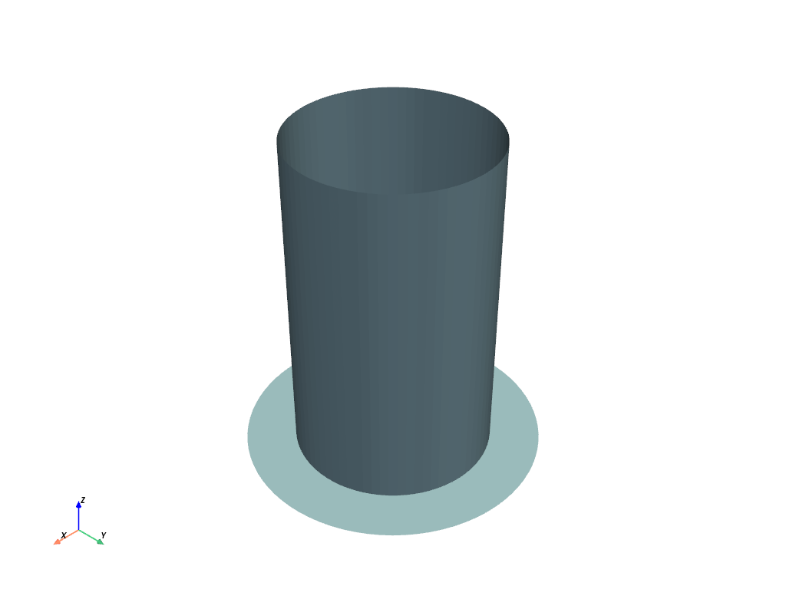

Note
Go to the end to download the full example code.
Buckling of beer can example#
This example is inspired by the “Buckling of Beer Can” example on the LS-DYNA Knowledge Base site. It shows how to use PyDyna to create a keyword file for LS-DYNA and then solve it from Python.
Perform required imports#
Import required packages, including those for the keywords, deck, and solver.
import os
import shutil
# subprocess is used to run LS-DYNA commands, excluding bandit warning
import subprocess # nosec: B404
import tempfile
import numpy as np
import pandas as pd
from ansys.dyna.core import Deck, keywords as kwd
from ansys.dyna.core.run import MemoryUnit, MpiOption, run_dyna
from ansys.dyna.core.utils.download_utilities import EXAMPLES_PATH, DownloadManager
rundir = tempfile.TemporaryDirectory()
mesh_file_name = "mesh.k"
mesh_file = DownloadManager().download_file(
mesh_file_name, "ls-dyna", "Buckling_Beer_Can", destination=os.path.join(EXAMPLES_PATH, "Buckling_Beer_Can")
)
dynafile = "beer_can.k"
Create a deck and keywords#
Create a deck, which is the container for all the keywords. Then, create and append individual keywords to the deck.
def write_deck(filepath):
deck = Deck()
# Append control keywords
contact_auto = kwd.ContactAutomaticSingleSurfaceMortar(cid=1)
contact_auto.options["ID"].active = True
contact_auto.heading = "Single-Surface Mortar Contact (The New Explicit/Implicit Standard)"
deck.extend(
[
contact_auto,
kwd.ControlAccuracy(iacc=1),
kwd.ControlImplicitAuto(iauto=1, dtmax=0.01),
kwd.ControlImplicitDynamics(imass=1, gamma=0.6, beta=0.38),
kwd.ControlImplicitGeneral(imflag=1, dt0=0.01),
kwd.ControlImplicitSolution(nlprint=2),
kwd.ControlShell(esort=2, theory=-16, intgrd=1, nfail4=1, irquad=0),
kwd.ControlTermination(endtim=1.0),
]
)
# Append database keywords
deck.extend(
[
kwd.DatabaseGlstat(dt=1.0e-4, binary=3, ioopt=0),
kwd.DatabaseSpcforc(dt=1e-4, binary=3, ioopt=0),
kwd.DatabaseBinaryD3Plot(dt=1.0e-4),
kwd.DatabaseExtentBinary(maxint=-3, nintsld=1),
]
)
# Part keywords
can_part = kwd.Part(heading="Beer Can", pid=1, secid=1, mid=1, eosid=0)
floor_part = kwd.Part(heading="Floor", pid=2, secid=2, mid=1)
# Material keywords
mat_elastic = kwd.MatElastic(mid=1, ro=2.59e-4, e=1.0e7, pr=0.33, title="Aluminum")
mat_elastic.options["TITLE"].active = True
# Section keywords
can_shell = kwd.SectionShell(secid=1, elform=-16, shrf=0.8333, nip=3, t1=0.002, propt=0.0, title="Beer Can")
can_shell.options["TITLE"].active = True
floor_shell = kwd.SectionShell(secid=2, elform=-16, shrf=0.833, t1=0.01, propt=0.0)
floor_shell.options["TITLE"].active = True
floor_shell.title = "Floor - Just for Contact (Rigid Wall Would Have Worked Also)"
deck.extend(
[
can_part,
can_shell,
floor_part,
floor_shell,
mat_elastic,
]
)
# Load curve
load_curve = kwd.DefineCurve(lcid=1, curves=pd.DataFrame({"a1": [0.00, 1.00], "o1": [0.0, 1.000]}))
load_curve.options["TITLE"].active = True
load_curve.title = "Load vs. Time"
deck.append(load_curve)
# Define boundary conditions
load_nodes = [
50,
621,
670,
671,
672,
673,
674,
675,
676,
677,
678,
679,
680,
681,
682,
683,
684,
685,
686,
687,
31,
32,
33,
34,
35,
36,
37,
38,
39,
40,
41,
42,
43,
44,
45,
46,
47,
48,
49,
1229,
1230,
1231,
1232,
1233,
1234,
1235,
1236,
1237,
1238,
1239,
1240,
1241,
1242,
1243,
1244,
1245,
1246,
1247,
1799,
1800,
1801,
1802,
1803,
1804,
1805,
1806,
1807,
1808,
1809,
1810,
1811,
1812,
1813,
1814,
1815,
1816,
]
count = len(load_nodes)
zeros = np.zeros(count)
load_node_point = kwd.LoadNodePoint(
nodes=pd.DataFrame(
{
"nid": load_nodes,
"dof": np.full((count), 3),
"lcid": np.full((count), 1),
"sf": np.full((count), -13.1579),
"cid": zeros,
"m1": zeros,
"m2": zeros,
"m3": zeros,
}
)
)
deck.append(load_node_point)
nid = [
1,
31,
32,
33,
34,
35,
36,
37,
38,
39,
40,
41,
42,
43,
44,
45,
46,
47,
48,
49,
50,
80,
81,
82,
83,
84,
85,
86,
87,
88,
89,
90,
91,
92,
93,
94,
95,
96,
97,
98,
621,
651,
652,
653,
654,
655,
656,
657,
658,
659,
660,
661,
662,
663,
664,
665,
666,
667,
668,
669,
670,
671,
672,
673,
674,
675,
676,
677,
678,
679,
680,
681,
682,
683,
684,
685,
686,
687,
1210,
1211,
1212,
1213,
1214,
1215,
1216,
1217,
1218,
1219,
1220,
1221,
1222,
1223,
1224,
1225,
1226,
1227,
1228,
1229,
1230,
1231,
1232,
1233,
1234,
1235,
1236,
1237,
1238,
1239,
1240,
1241,
1242,
1243,
1244,
1245,
1246,
1247,
1799,
1800,
1801,
1802,
1803,
1804,
1805,
1806,
1807,
1808,
1809,
1810,
1811,
1812,
1813,
1814,
1815,
1816,
1817,
1818,
1819,
1820,
1821,
1822,
1823,
1824,
1825,
1826,
1827,
1828,
1829,
1830,
1831,
1832,
1833,
1834,
]
count = len(nid)
zeros = np.zeros(count)
ones = np.full((count), 1)
dofz = [
1,
0,
0,
0,
0,
0,
0,
0,
0,
0,
0,
0,
0,
0,
0,
0,
0,
0,
0,
0,
0,
1,
1,
1,
1,
1,
1,
1,
1,
1,
1,
1,
1,
1,
1,
1,
1,
1,
1,
1,
0,
1,
1,
1,
1,
1,
1,
1,
1,
1,
1,
1,
1,
1,
1,
1,
1,
1,
1,
1,
0,
0,
0,
0,
0,
0,
0,
0,
0,
0,
0,
0,
0,
0,
0,
0,
0,
0,
1,
1,
1,
1,
1,
1,
1,
1,
1,
1,
1,
1,
1,
1,
1,
1,
1,
1,
1,
0,
0,
0,
0,
0,
0,
0,
0,
0,
0,
0,
0,
0,
0,
0,
0,
0,
0,
0,
0,
0,
0,
0,
0,
0,
0,
0,
0,
0,
0,
0,
0,
0,
0,
0,
0,
0,
1,
1,
1,
1,
1,
1,
1,
1,
1,
1,
1,
1,
1,
1,
1,
1,
1,
1,
]
boundary_spc_node = kwd.BoundarySpcNode(
nodes=pd.DataFrame(
{
"nid": nid,
"cid": zeros,
"dofx": ones,
"dofy": ones,
"dofz": dofz,
"dofrx": ones,
"dofry": ones,
"dofrz": ones,
}
)
)
deck.append(boundary_spc_node)
# Define nodes and elements
deck.append(kwd.Include(filename=mesh_file_name))
deck.export_file(filepath)
return deck
def run_post(filepath):
pass
shutil.copy(mesh_file, os.path.join(rundir.name, mesh_file_name))
deck = write_deck(os.path.join(rundir.name, dynafile))
View the model#
You can use the PyVista plot method in the deck class to view
the model.
deck.plot(cwd=rundir.name)

Run the Dyna solver#
try:
run_dyna(
dynafile,
working_directory=rundir.name,
ncpu=2,
mpi_option=MpiOption.MPP_INTEL_MPI,
memory=20,
memory_unit=MemoryUnit.MB,
)
except subprocess.CalledProcessError:
# this example doesn't run to completion because it is a highly nonlinear buckling
pass
run_post(rundir.name)
License option : check ansys licenses only
***************************************************************
* ANSYS LEGAL NOTICES *
***************************************************************
* *
* Copyright 1971-2025 ANSYS, Inc. All rights reserved. *
* Unauthorized use, distribution or duplication is *
* prohibited. *
* *
* Ansys is a registered trademark of ANSYS, Inc. or its *
* subsidiaries in the United States or other countries. *
* See the ANSYS, Inc. online documentation or the ANSYS, Inc. *
* documentation CD or online help for the complete Legal *
* Notice. *
* *
***************************************************************
* *
* THIS ANSYS SOFTWARE PRODUCT AND PROGRAM DOCUMENTATION *
* INCLUDE TRADE SECRETS AND CONFIDENTIAL AND PROPRIETARY *
* PRODUCTS OF ANSYS, INC., ITS SUBSIDIARIES, OR LICENSORS. *
* The software products and documentation are furnished by *
* ANSYS, Inc. or its subsidiaries under a software license *
* agreement that contains provisions concerning *
* non-disclosure, copying, length and nature of use, *
* compliance with exporting laws, warranties, disclaimers, *
* limitations of liability, and remedies, and other *
* provisions. The software products and documentation may be *
* used, disclosed, transferred, or copied only in accordance *
* with the terms and conditions of that software license *
* agreement. *
* *
* ANSYS, Inc. is a UL registered *
* ISO 9001:2015 company. *
* *
***************************************************************
* *
* This product is subject to U.S. laws governing export and *
* re-export. *
* *
* For U.S. Government users, except as specifically granted *
* by the ANSYS, Inc. software license agreement, the use, *
* duplication, or disclosure by the United States Government *
* is subject to restrictions stated in the ANSYS, Inc. *
* software license agreement and FAR 12.212 (for non-DOD *
* licenses). *
* *
***************************************************************
Date: 05/03/2026 Time: 00:30:21
___________________________________________________
| |
| LS-DYNA, A Program for Nonlinear Dynamic |
| Analysis of Structures in Three Dimensions |
| Date : 10/01/2025 Time: 13:03:42 |
| Version : mpp d R16 |
| Revision: R16.1.1-20-g0c90cad538 |
| AnLicVer: 2025 R2 (20250506+dl-73-g4dde854) |
| |
| Features enabled in this version: |
| Distributed Memory Parallel |
| CESE CHEMISTRY EM ICFD STOCHASTIC_PARTICLES |
| FFTW (multi-dimensional FFTW Library) |
| ANSYSLIC enabled |
| |
| Platform : OpenMPI 4.0.5 x86-64 |
| OS Level : Linux 3.10.0 uum |
| Compiler : Intel Fortran Compiler 19.0 SSE2 |
| Hostname : 941327ee104f |
| Precision : Double precision (I8R8) |
| |
| Unauthorized use infringes Ansys Inc. copyrights |
|___________________________________________________|
Messages file /ansys_inc/v252/licensingclient/language/en-us/ansysli_msgs.xml does not exist.
[license/info] Successfully checked out 2 of "dyna_solver_core".
[license/info] --> Checkout ID: 941327ee104f-root-24-000003 (days left: 261)
[license/info] --> Customer ID: 0
[license/info] Successfully started "LSDYNA (Core-based License)".
Executing with ANSYS license
Command line options: i=beer_can.k
memory=20m
Input file: beer_can.k
The native file format : 64-bit small endian
Memory size from command line: 20000000, 0
Memory size from command line: 20000000, 20000000
Memory for the head node
Memory installed (MB) : 32092
Memory available (MB) : 30144
on UNIX computers note the following change:
ctrl-c interrupts ls-dyna and prompts for a sense switch.
type the desired sense switch: sw1., sw2., etc. to continue
the execution. ls-dyna will respond as explained in the users manual
type response
----- ------------------------------------------------------------
quit ls-dyna terminates.
stop ls-dyna terminates.
sw1. a restart file is written and ls-dyna terminates.
sw2. ls-dyna responds with time and cycle numbers.
sw3. a restart file is written and ls-dyna continues calculations.
sw4. a plot state is written and ls-dyna continues calculations.
sw5. ls-dyna enters interactive graphics phase.
swa. ls-dyna flushes all output i/o buffers.
swb. a dynain is written and ls-dyna continues calculations.
swc. a restart and dynain are written and ls-dyna continues calculations.
swd. a restart and dynain are written and ls-dyna terminates.
swe. stop dynamic relaxation just as though convergence
endtime=time change the termination time
lpri toggle implicit lin. alg. solver output on/off.
nlpr toggle implicit nonlinear solver output on/off.
iter toggle implicit output to d3iter database on/off.
prof output timing data to prof.out and continue.
conv force implicit nonlinear convergence for current time step.
ttrm terminate implicit time step, reduce time step, retry time step.
rtrm terminate implicit at end of current time step.
******** notice ******** notice ******** notice ********
* *
* This is the LS-DYNA Finite Element code. *
* *
* Neither LST nor the authors assume any responsibility for *
* the validity, accuracy, or applicability of any results *
* obtained from this system. Users must verify their own *
* results. *
* *
* LST endeavors to make the LS-DYNA code as complete, *
* accurate and easy to use as possible. *
* Suggestions and comments are welcomed. Please report any *
* errors encountered in either the documentation or results *
* immediately to LST through your site focus. *
* *
* Copyright (C) 1990-2021 *
* by Livermore Software Technology, LLC *
* All rights reserved *
* *
******** notice ******** notice ******** notice ********
Beginning of keyword reader 05/03/26 00:30:29
05/03/26 00:30:29
Open include file: mesh.k
Memory required to process keyword : 285640
Additional dynamic memory required : 2421751
MPP execution with 2 procs
Initial reading of file 05/03/26 00:30:29
Implicit dynamics is now active
Loading usermat shared library /opt/dyna/ls-dyna_mpp_d_R16_1_1_x64_centos79_ifort190_sse2_openmpi405_sharelib/libmppdyna_d_R16.1.1-20-g0c90cad538_sse2_ifort190_openmpi.so
build: R16.1.1-20-g0c90cad538
version: mpp
precision: double
nlq: 72
This binary:
build: R16.1.1-20-g0c90cad538
version: mpp
precision: double
nlq: 72
Performing Decomposition -- Phase 1 05/03/26 00:30:29
Performing Recursive Coordinate Bisection (RCB)
Memory required for decomposition : 53592
Additional dynamic memory required : 2603894
Performing Decomposition -- Phase 2 05/03/26 00:30:29
Performing Decomposition -- Phase 3 05/03/26 00:30:29
Implicit dynamics is now active
Loading usermat shared library /opt/dyna/ls-dyna_mpp_d_R16_1_1_x64_centos79_ifort190_sse2_openmpi405_sharelib/libmppdyna_d_R16.1.1-20-g0c90cad538_sse2_ifort190_openmpi.so
build: R16.1.1-20-g0c90cad538
version: mpp
precision: double
nlq: 72
This binary:
build: R16.1.1-20-g0c90cad538
version: mpp
precision: double
nlq: 72
Loading usermat shared library /opt/dyna/ls-dyna_mpp_d_R16_1_1_x64_centos79_ifort190_sse2_openmpi405_sharelib/libmppdyna_d_R16.1.1-20-g0c90cad538_sse2_ifort190_openmpi.so
build: R16.1.1-20-g0c90cad538
version: mpp
precision: double
nlq: 72
This binary:
build: R16.1.1-20-g0c90cad538
version: mpp
precision: double
nlq: 72
input of data is completed
initial kinetic energy = 0.00000000E+00
The LS-DYNA time step size should not exceed 1.656E-07
to avoid contact instabilities. If the step size is
bigger then scale the penalty of the offending surface.
Implicit dynamics is now active
termination time = 1.000E+00
The following binary output files are being created,
and contain data equivalent to the indicated ascii output files
binout0000: (on processor 0)
glstat
spcforc
Memory required to begin solution (memory= 286K)
Minimum 33K on processor 1
Maximum 37K on processor 0
Average 35K
Matrix Assembly dynamically allocated memory
Maximum 160K
Additional dynamically allocated memory
Minimum 4952K on processor 1
Maximum 5216K on processor 0
Average 5084K
Total allocated memory
Minimum 5143K on processor 1
Maximum 5412K on processor 0
Average 5277K
initialization completed
calculation with mass scaling for minimum dt
added mass = 0.0000E+00
physical mass= 6.5553E-05
ratio = 0.0000E+00
1 t 0.0000E+00 dt 1.00E-02 flush i/o buffers 05/03/26 00:30:29
1 t 0.0000E+00 dt 1.00E-02 write d3plot file 05/03/26 00:30:29
Implicit dynamics is now active
BEGIN implicit dynamics step 1 t= 1.0000E-02 05/03/26 00:30:29
============================================================
time = 1.00000E-02
current step size = 1.00000E-02
================================================
== IMPLICIT USAGE ALERT ==
================================================
== Memory Management for Implicit has changed ==
== after R10. Please use: ==
== memory= 1M memory2= 1M ==
================================================
Iteration: 1 *|du|/|u| = 1.0000000E+00 *Ei/E0 = 1.0000000E+00
Iteration: 2 *|du|/|u| = 3.2021998E-04 *Ei/E0 = 2.0305877E-07
Equilibrium established after 2 iterations 05/03/26 00:30:29
estimated total cpu time = 37 sec ( 0 hrs 0 mins)
estimated cpu time to complete = 37 sec ( 0 hrs 0 mins)
estimated total clock time = 45 sec ( 0 hrs 0 mins)
estimated clock time to complete = 37 sec ( 0 hrs 0 mins)
6 t 1.0000E-02 dt 1.00E-02 write d3plot file 05/03/26 00:30:29
BEGIN implicit dynamics step 2 t= 2.0000E-02 05/03/26 00:30:29
============================================================
time = 2.00000E-02
current step size = 1.00000E-02
Iteration: 1 *|du|/|u| = 5.0000250E-01 *Ei/E0 = 1.0000000E+00
Iteration: 2 *|du|/|u| = 3.2522434E-04 *Ei/E0 = 9.9652440E-07
Equilibrium established after 2 iterations 05/03/26 00:30:29
10 t 2.0000E-02 dt 1.00E-02 write d3plot file 05/03/26 00:30:29
BEGIN implicit dynamics step 3 t= 3.0000E-02 05/03/26 00:30:29
============================================================
time = 3.00000E-02
current step size = 1.00000E-02
Iteration: 1 *|du|/|u| = 3.3332563E-01 *Ei/E0 = 9.9996901E-01
Iteration: 2 *|du|/|u| = 3.3075191E-04 *Ei/E0 = 2.4420703E-06
Equilibrium established after 2 iterations 05/03/26 00:30:30
14 t 3.0000E-02 dt 1.00E-02 write d3plot file 05/03/26 00:30:30
BEGIN implicit dynamics step 4 t= 4.0000E-02 05/03/26 00:30:30
============================================================
time = 4.00000E-02
current step size = 1.00000E-02
Iteration: 1 *|du|/|u| = 2.4999550E-01 *Ei/E0 = 1.0000000E+00
Iteration: 2 *|du|/|u| = 3.3675018E-04 *Ei/E0 = 4.6079810E-06
Equilibrium established after 2 iterations 05/03/26 00:30:30
18 t 4.0000E-02 dt 1.00E-02 write d3plot file 05/03/26 00:30:30
BEGIN implicit dynamics step 5 t= 5.0000E-02 05/03/26 00:30:30
============================================================
time = 5.00000E-02
current step size = 1.00000E-02
Iteration: 1 *|du|/|u| = 1.9999607E-01 *Ei/E0 = 1.0000000E+00
Iteration: 2 *|du|/|u| = 3.4322009E-04 *Ei/E0 = 7.5743565E-06
Equilibrium established after 2 iterations 05/03/26 00:30:30
22 t 5.0000E-02 dt 1.00E-02 write d3plot file 05/03/26 00:30:30
BEGIN implicit dynamics step 6 t= 6.0000E-02 05/03/26 00:30:30
============================================================
time = 6.00000E-02
current step size = 1.00000E-02
Iteration: 1 *|du|/|u| = 1.6665977E-01 *Ei/E0 = 9.9999171E-01
Iteration: 2 *|du|/|u| = 3.5019120E-04 *Ei/E0 = 1.1436149E-05
Equilibrium established after 2 iterations 05/03/26 00:30:30
26 t 6.0000E-02 dt 1.00E-02 write d3plot file 05/03/26 00:30:30
BEGIN implicit dynamics step 7 t= 7.0000E-02 05/03/26 00:30:30
============================================================
time = 7.00000E-02
current step size = 1.00000E-02
Iteration: 1 *|du|/|u| = 1.4285164E-01 *Ei/E0 = 1.0000000E+00
Iteration: 2 *|du|/|u| = 3.5773447E-04 *Ei/E0 = 1.6307569E-05
Equilibrium established after 2 iterations 05/03/26 00:30:31
30 t 7.0000E-02 dt 1.00E-02 write d3plot file 05/03/26 00:30:31
BEGIN implicit dynamics step 8 t= 8.0000E-02 05/03/26 00:30:31
============================================================
time = 8.00000E-02
current step size = 1.00000E-02
Iteration: 1 *|du|/|u| = 1.2499492E-01 *Ei/E0 = 1.0000000E+00
Iteration: 2 *|du|/|u| = 3.6588923E-04 *Ei/E0 = 2.2323128E-05
Equilibrium established after 2 iterations 05/03/26 00:30:31
34 t 8.0000E-02 dt 1.00E-02 write d3plot file 05/03/26 00:30:31
BEGIN implicit dynamics step 9 t= 9.0000E-02 05/03/26 00:30:31
============================================================
time = 9.00000E-02
current step size = 1.00000E-02
Iteration: 1 *|du|/|u| = 1.1110503E-01 *Ei/E0 = 1.0000000E+00
Iteration: 2 *|du|/|u| = 3.7471370E-04 *Ei/E0 = 2.9644259E-05
Equilibrium established after 2 iterations 05/03/26 00:30:31
estimated total cpu time = 24 sec ( 0 hrs 0 mins)
estimated cpu time to complete = 22 sec ( 0 hrs 0 mins)
estimated total clock time = 31 sec ( 0 hrs 0 mins)
estimated clock time to complete = 22 sec ( 0 hrs 0 mins)
38 t 9.0000E-02 dt 1.00E-02 write d3plot file 05/03/26 00:30:31
BEGIN implicit dynamics step 10 t= 1.0000E-01 05/03/26 00:30:31
============================================================
time = 1.00000E-01
current step size = 1.00000E-02
Iteration: 1 *|du|/|u| = 9.9994793E-02 *Ei/E0 = 1.0000000E+00
Iteration: 2 *|du|/|u| = 3.8429631E-04 *Ei/E0 = 3.8466480E-05
Equilibrium established after 2 iterations 05/03/26 00:30:31
42 t 1.0000E-01 dt 1.00E-02 write d3plot file 05/03/26 00:30:31
BEGIN implicit dynamics step 11 t= 1.1000E-01 05/03/26 00:30:31
============================================================
time = 1.10000E-01
current step size = 1.00000E-02
Iteration: 1 *|du|/|u| = 9.0904278E-02 *Ei/E0 = 1.0000000E+00
Iteration: 2 *|du|/|u| = 3.9471113E-04 *Ei/E0 = 4.9024560E-05
Equilibrium established after 2 iterations 05/03/26 00:30:32
46 t 1.1000E-01 dt 1.00E-02 write d3plot file 05/03/26 00:30:32
BEGIN implicit dynamics step 12 t= 1.2000E-01 05/03/26 00:30:32
============================================================
time = 1.20000E-01
current step size = 1.00000E-02
Iteration: 1 *|du|/|u| = 8.3328303E-02 *Ei/E0 = 1.0000000E+00
Iteration: 2 *|du|/|u| = 4.0605414E-04 *Ei/E0 = 6.1604242E-05
Equilibrium established after 2 iterations 05/03/26 00:30:32
50 t 1.2000E-01 dt 1.00E-02 write d3plot file 05/03/26 00:30:32
BEGIN implicit dynamics step 13 t= 1.3000E-01 05/03/26 00:30:32
============================================================
time = 1.30000E-01
current step size = 1.00000E-02
Iteration: 1 *|du|/|u| = 7.6918751E-02 *Ei/E0 = 1.0000000E+00
Iteration: 2 *|du|/|u| = 4.1845031E-04 *Ei/E0 = 7.6556880E-05
Equilibrium established after 2 iterations 05/03/26 00:30:32
54 t 1.3000E-01 dt 1.00E-02 write d3plot file 05/03/26 00:30:32
BEGIN implicit dynamics step 14 t= 1.4000E-01 05/03/26 00:30:32
============================================================
time = 1.40000E-01
current step size = 1.00000E-02
Iteration: 1 *|du|/|u| = 7.1424697E-02 *Ei/E0 = 1.0000000E+00
Iteration: 2 *|du|/|u| = 4.3202769E-04 *Ei/E0 = 9.4313882E-05
Equilibrium established after 2 iterations 05/03/26 00:30:32
58 t 1.4000E-01 dt 1.00E-02 write d3plot file 05/03/26 00:30:32
BEGIN implicit dynamics step 15 t= 1.5000E-01 05/03/26 00:30:32
============================================================
time = 1.50000E-01
current step size = 1.00000E-02
Iteration: 1 *|du|/|u| = 6.6662985E-02 *Ei/E0 = 1.0000000E+00
Iteration: 2 *|du|/|u| = 4.4694473E-04 *Ei/E0 = 1.1541147E-04
Equilibrium established after 2 iterations 05/03/26 00:30:32
62 t 1.5000E-01 dt 1.00E-02 write d3plot file 05/03/26 00:30:32
BEGIN implicit dynamics step 16 t= 1.6000E-01 05/03/26 00:30:32
============================================================
time = 1.60000E-01
current step size = 1.00000E-02
Iteration: 1 *|du|/|u| = 6.2497003E-02 *Ei/E0 = 1.0000000E+00
Iteration: 2 *|du|/|u| = 4.6339728E-04 *Ei/E0 = 1.4052301E-04
Equilibrium established after 2 iterations 05/03/26 00:30:33
66 t 1.6000E-01 dt 1.00E-02 write d3plot file 05/03/26 00:30:33
BEGIN implicit dynamics step 17 t= 1.7000E-01 05/03/26 00:30:33
============================================================
time = 1.70000E-01
current step size = 1.00000E-02
Iteration: 1 *|du|/|u| = 5.8821090E-02 *Ei/E0 = 1.0000000E+00
Iteration: 2 *|du|/|u| = 4.8160702E-04 *Ei/E0 = 1.7049795E-04
Equilibrium established after 2 iterations 05/03/26 00:30:33
70 t 1.7000E-01 dt 1.00E-02 write d3plot file 05/03/26 00:30:33
BEGIN implicit dynamics step 18 t= 1.8000E-01 05/03/26 00:30:33
============================================================
time = 1.80000E-01
current step size = 1.00000E-02
Iteration: 1 *|du|/|u| = 5.5553579E-02 *Ei/E0 = 1.0000000E+00
Iteration: 2 *|du|/|u| = 5.0184571E-04 *Ei/E0 = 2.0642063E-04
Equilibrium established after 2 iterations 05/03/26 00:30:33
74 t 1.8000E-01 dt 1.00E-02 write d3plot file 05/03/26 00:30:33
BEGIN implicit dynamics step 19 t= 1.9000E-01 05/03/26 00:30:33
============================================================
time = 1.90000E-01
current step size = 1.00000E-02
Iteration: 1 *|du|/|u| = 5.2630351E-02 *Ei/E0 = 1.0000000E+00
Iteration: 2 *|du|/|u| = 5.2444697E-04 *Ei/E0 = 2.4969124E-04
Equilibrium established after 2 iterations 05/03/26 00:30:33
78 t 1.9000E-01 dt 1.00E-02 write d3plot file 05/03/26 00:30:33
BEGIN implicit dynamics step 20 t= 2.0000E-01 05/03/26 00:30:33
============================================================
time = 2.00000E-01
current step size = 1.00000E-02
Iteration: 1 *|du|/|u| = 4.9999469E-02 *Ei/E0 = 1.0000000E+00
Iteration: 2 *|du|/|u| = 5.4980972E-04 *Ei/E0 = 3.0213428E-04
Equilibrium established after 2 iterations 05/03/26 00:30:34
82 t 2.0000E-01 dt 1.00E-02 write d3plot file 05/03/26 00:30:34
BEGIN implicit dynamics step 21 t= 2.1000E-01 05/03/26 00:30:34
============================================================
time = 2.10000E-01
current step size = 1.00000E-02
Iteration: 1 *|du|/|u| = 4.7619198E-02 *Ei/E0 = 1.0000000E+00
Iteration: 2 *|du|/|u| = 5.7842801E-04 *Ei/E0 = 3.6615844E-04
Equilibrium established after 2 iterations 05/03/26 00:30:34
86 t 2.1000E-01 dt 1.00E-02 write d3plot file 05/03/26 00:30:34
BEGIN implicit dynamics step 22 t= 2.2000E-01 05/03/26 00:30:34
============================================================
time = 2.20000E-01
current step size = 1.00000E-02
Iteration: 1 *|du|/|u| = 4.5455558E-02 *Ei/E0 = 1.0000000E+00
Iteration: 2 *|du|/|u| = 6.1091730E-04 *Ei/E0 = 4.4498578E-04
Equilibrium established after 2 iterations 05/03/26 00:30:34
90 t 2.2000E-01 dt 1.00E-02 write d3plot file 05/03/26 00:30:34
BEGIN implicit dynamics step 23 t= 2.3000E-01 05/03/26 00:30:34
============================================================
time = 2.30000E-01
current step size = 1.00000E-02
Iteration: 1 *|du|/|u| = 4.3480125E-02 *Ei/E0 = 1.0000000E+00
Iteration: 2 *|du|/|u| = 6.4804294E-04 *Ei/E0 = 5.4298444E-04
Equilibrium established after 2 iterations 05/03/26 00:30:34
94 t 2.3000E-01 dt 1.00E-02 write d3plot file 05/03/26 00:30:34
BEGIN implicit dynamics step 24 t= 2.4000E-01 05/03/26 00:30:34
============================================================
time = 2.40000E-01
current step size = 1.00000E-02
Iteration: 1 *|du|/|u| = 4.1669394E-02 *Ei/E0 = 1.0000000E+00
Iteration: 2 *|du|/|u| = 6.9077669E-04 *Ei/E0 = 6.6616635E-04
Equilibrium established after 2 iterations 05/03/26 00:30:35
98 t 2.4000E-01 dt 1.00E-02 write d3plot file 05/03/26 00:30:35
BEGIN implicit dynamics step 25 t= 2.5000E-01 05/03/26 00:30:35
============================================================
time = 2.50000E-01
current step size = 1.00000E-02
Iteration: 1 *|du|/|u| = 4.0003696E-02 *Ei/E0 = 1.0000000E+00
Iteration: 2 *|du|/|u| = 7.4036921E-04 *Ei/E0 = 8.2293933E-04
Equilibrium established after 2 iterations 05/03/26 00:30:35
102 t 2.5000E-01 dt 1.00E-02 write d3plot file 05/03/26 00:30:35
BEGIN implicit dynamics step 26 t= 2.6000E-01 05/03/26 00:30:35
============================================================
time = 2.60000E-01
current step size = 1.00000E-02
Iteration: 1 *|du|/|u| = 3.8466177E-02 *Ei/E0 = 1.0000000E+00
Iteration: 2 *|du|/|u| = 7.9846254E-04 *Ei/E0 = 1.0252702E-03
Equilibrium established after 2 iterations 05/03/26 00:30:35
106 t 2.6000E-01 dt 1.00E-02 write d3plot file 05/03/26 00:30:35
BEGIN implicit dynamics step 27 t= 2.7000E-01 05/03/26 00:30:35
============================================================
time = 2.70000E-01
current step size = 1.00000E-02
Iteration: 1 *|du|/|u| = 3.7042582E-02 *Ei/E0 = 1.0000000E+00
Iteration: 2 *|du|/|u| = 8.6732233E-04 *Ei/E0 = 1.2905079E-03
Equilibrium established after 2 iterations 05/03/26 00:30:35
110 t 2.7000E-01 dt 1.00E-02 write d3plot file 05/03/26 00:30:35
BEGIN implicit dynamics step 28 t= 2.8000E-01 05/03/26 00:30:35
============================================================
time = 2.80000E-01
current step size = 1.00000E-02
Iteration: 1 *|du|/|u| = 3.5720698E-02 *Ei/E0 = 1.0000000E+00
Iteration: 2 *|du|/|u| = 9.5043245E-04 *Ei/E0 = 1.6443215E-03
Equilibrium established after 2 iterations 05/03/26 00:30:36
114 t 2.8000E-01 dt 1.00E-02 write d3plot file 05/03/26 00:30:36
BEGIN implicit dynamics step 29 t= 2.9000E-01 05/03/26 00:30:36
============================================================
time = 2.90000E-01
current step size = 1.00000E-02
Iteration: 1 *|du|/|u| = 3.4489877E-02 *Ei/E0 = 1.0000000E+00
Iteration: 2 *|du|/|u| = 1.0546097E-03 *Ei/E0 = 2.1255590E-03
Equilibrium established after 2 iterations 05/03/26 00:30:36
118 t 2.9000E-01 dt 1.00E-02 write d3plot file 05/03/26 00:30:36
BEGIN implicit dynamics step 30 t= 3.0000E-01 05/03/26 00:30:36
============================================================
time = 3.00000E-01
current step size = 1.00000E-02
Iteration: 1 *|du|/|u| = 3.3341080E-02 *Ei/E0 = 1.0000000E+00
Iteration: 2 *|du|/|u| = 1.1993863E-03 *Ei/E0 = 2.7945526E-03
Equilibrium established after 2 iterations 05/03/26 00:30:36
122 t 3.0000E-01 dt 1.00E-02 write d3plot file 05/03/26 00:30:36
BEGIN implicit dynamics step 31 t= 3.1000E-01 05/03/26 00:30:36
============================================================
time = 3.10000E-01
current step size = 1.00000E-02
Iteration: 1 *|du|/|u| = 3.2267524E-02 *Ei/E0 = 1.0000000E+00
Iteration: 2 *|du|/|u| = 1.4625221E-03 *Ei/E0 = 3.7483755E-03
Equilibrium established after 2 iterations 05/03/26 00:30:36
126 t 3.1000E-01 dt 1.00E-02 write d3plot file 05/03/26 00:30:36
BEGIN implicit dynamics step 32 t= 3.2000E-01 05/03/26 00:30:36
============================================================
time = 3.20000E-01
current step size = 1.00000E-02
Iteration: 1 *|du|/|u| = 3.1270930E-02 *Ei/E0 = 1.0000000E+00
Iteration: 2 *|du|/|u| = 2.1772524E-03 *Ei/E0 = 5.1543716E-03
Equilibrium established after 2 iterations 05/03/26 00:30:37
130 t 3.2000E-01 dt 1.00E-02 write d3plot file 05/03/26 00:30:37
BEGIN implicit dynamics step 33 t= 3.3000E-01 05/03/26 00:30:37
============================================================
time = 3.30000E-01
current step size = 1.00000E-02
Iteration: 1 *|du|/|u| = 3.0410595E-02 *Ei/E0 = 1.0000000E+00
Iteration: 2 *|du|/|u| = 4.5139295E-03 *Ei/E0 = 7.3650779E-03
Equilibrium established after 2 iterations 05/03/26 00:30:37
134 t 3.3000E-01 dt 1.00E-02 write d3plot file 05/03/26 00:30:37
BEGIN implicit dynamics step 34 t= 3.4000E-01 05/03/26 00:30:37
============================================================
time = 3.40000E-01
current step size = 1.00000E-02
Iteration: 1 *|du|/|u| = 3.0212010E-02 *Ei/E0 = 1.0000000E+00
Iteration: 2 *|du|/|u| = 1.1995940E-02 *Ei/E0 = 1.1650989E-02
Iteration: 3 *|du|/|u| = 2.1795307E-01 *Ei/E0 = 1.3711529E-01
DIVERGENCE (increasing translational residual norm) detected:
current norm 1.519E+01 exceeds prior maximum 1.134E+01
automatically REFORMING stiffness matrix...
Iteration: 4 *|du|/|u| = 5.9801853E-02 *Ei/E0 = 4.0841646E-02
Iteration: 5 *|du|/|u| = 8.7798325E-02 *Ei/E0 = 6.9588176E-02
DIVERGENCE (increasing translational residual norm) detected:
current norm 5.071E+01 exceeds prior maximum 1.519E+01
automatically REFORMING stiffness matrix...
Iteration: 6 *|du|/|u| = 1.6184542E-01 *Ei/E0 = 3.2401524E-01
DIVERGENCE (increasing translational residual norm) detected:
current norm 8.179E+01 exceeds prior maximum 5.071E+01
automatically REFORMING stiffness matrix...
Iteration: 7 *|du|/|u| = 2.7859445E-01 *Ei/E0 = 1.0209181E+00
DIVERGENCE (increasing translational residual norm) detected:
current norm 1.698E+02 exceeds prior maximum 8.179E+01
automatically REFORMING stiffness matrix...
Iteration: 8 *|du|/|u| = 4.6561452E-01 *Ei/E0 = 3.8854914E+00
DIVERGENCE (increasing translational residual norm) detected:
current norm 2.685E+02 exceeds prior maximum 1.698E+02
automatically REFORMING stiffness matrix...
Iteration: 9 *|du|/|u| = 7.5555724E-01 *Ei/E0 = 1.1795502E+01
DIVERGENCE (increasing translational residual norm) detected:
current norm 3.471E+02 exceeds prior maximum 2.685E+02
automatically REFORMING stiffness matrix...
Iteration: 10 *|du|/|u| = 1.0664893E+00 *Ei/E0 = 2.8372484E+01
DIVERGENCE (increasing translational residual norm) detected:
current norm 5.081E+02 exceeds prior maximum 3.471E+02
automatically REFORMING stiffness matrix...
Iteration: 11 *|du|/|u| = 1.4427976E+00 *Ei/E0 = 7.3394112E+01
DIVERGENCE (increasing translational residual norm) detected:
current norm 7.273E+02 exceeds prior maximum 5.081E+02
automatically REFORMING stiffness matrix...
Iteration: 12 *|du|/|u| = 1.6615009E+00 *Ei/E0 = 1.4500354E+02
DIVERGENCE (increasing translational residual norm) detected:
current norm 9.471E+02 exceeds prior maximum 7.273E+02
automatically REFORMING stiffness matrix...
Iteration: 13 *|du|/|u| = 1.8194861E+00 *Ei/E0 = 2.3447787E+02
DIVERGENCE (increasing translational residual norm) detected:
current norm 1.147E+03 exceeds prior maximum 9.471E+02
automatically REFORMING stiffness matrix...
Iteration: 14 *|du|/|u| = 1.9371522E+00 *Ei/E0 = 3.4817936E+02
DIVERGENCE (increasing translational residual norm) detected:
current norm 1.327E+03 exceeds prior maximum 1.147E+03
automatically REFORMING stiffness matrix...
Iteration: 15 *|du|/|u| = 1.8224004E+00 *Ei/E0 = 4.7837656E+02
DIVERGENCE (increasing translational residual norm) detected:
current norm 1.528E+03 exceeds prior maximum 1.327E+03
automatically REFORMING stiffness matrix...
Iteration: 16 *|du|/|u| = 1.6131625E+00 *Ei/E0 = 6.0426264E+02
DIVERGENCE (increasing translational residual norm) detected:
current norm 1.781E+03 exceeds prior maximum 1.528E+03
automatically REFORMING stiffness matrix...
Iteration: 17 *|du|/|u| = 1.4999747E+00 *Ei/E0 = 7.5755565E+02
DIVERGENCE (increasing translational residual norm) detected:
current norm 2.070E+03 exceeds prior maximum 1.781E+03
automatically REFORMING stiffness matrix...
Iteration: 18 *|du|/|u| = 1.1519774E+00 *Ei/E0 = 8.8187607E+02
DIVERGENCE (increasing translational residual norm) detected:
current norm 2.458E+03 exceeds prior maximum 2.070E+03
automatically REFORMING stiffness matrix...
Iteration: 19 *|du|/|u| = 9.3084663E-01 *Ei/E0 = 9.6865037E+02
DIVERGENCE (increasing translational residual norm) detected:
current norm 2.907E+03 exceeds prior maximum 2.458E+03
automatically REFORMING stiffness matrix...
------------------------------------------------------------
automatic time step size DECREASE, RETRY step:
dt(old) = 1.00000E-02 dt(new) = 4.64159E-03
------------------------------------------------------------
BEGIN implicit dynamics step 34 t= 3.3464E-01 05/03/26 00:30:41
============================================================
time = 3.34642E-01
current step size = 4.64159E-03
Iteration: 1 *|du|/|u| = 1.5449474E-02 *Ei/E0 = 2.1767331E-01
Iteration: 2 *|du|/|u| = 1.1763325E-02 *Ei/E0 = 7.1275425E-03
Iteration: 3 *|du|/|u| = 2.9281557E-01 *Ei/E0 = 1.2834643E-01
DIVERGENCE (increasing translational residual norm) detected:
current norm 1.135E+01 exceeds prior maximum 5.978E+00
automatically REFORMING stiffness matrix...
Iteration: 4 *|du|/|u| = 5.0443255E-02 *Ei/E0 = 2.6425141E-02
Iteration: 5 *|du|/|u| = 7.5428631E-02 *Ei/E0 = 4.7167373E-02
DIVERGENCE (increasing translational residual norm) detected:
current norm 3.553E+01 exceeds prior maximum 1.135E+01
automatically REFORMING stiffness matrix...
Iteration: 6 *|du|/|u| = 1.3557906E-01 *Ei/E0 = 1.8778599E-01
Iteration: 7 *|du|/|u| = 1.3244813E-01 *Ei/E0 = 1.9367695E-01
DIVERGENCE (increasing translational residual norm) detected:
current norm 8.600E+01 exceeds prior maximum 3.553E+01
automatically REFORMING stiffness matrix...
Iteration: 8 *|du|/|u| = 2.5226966E-01 *Ei/E0 = 9.0283696E-01
DIVERGENCE (increasing translational residual norm) detected:
current norm 1.596E+02 exceeds prior maximum 8.600E+01
automatically REFORMING stiffness matrix...
Iteration: 9 *|du|/|u| = 4.2294805E-01 *Ei/E0 = 3.1042972E+00
DIVERGENCE (increasing translational residual norm) detected:
current norm 2.521E+02 exceeds prior maximum 1.596E+02
automatically REFORMING stiffness matrix...
Iteration: 10 *|du|/|u| = 6.8521825E-01 *Ei/E0 = 9.5150790E+00
DIVERGENCE (increasing translational residual norm) detected:
current norm 3.378E+02 exceeds prior maximum 2.521E+02
automatically REFORMING stiffness matrix...
Iteration: 11 *|du|/|u| = 9.9970713E-01 *Ei/E0 = 2.4379795E+01
DIVERGENCE (increasing translational residual norm) detected:
current norm 4.922E+02 exceeds prior maximum 3.378E+02
automatically REFORMING stiffness matrix...
Iteration: 12 *|du|/|u| = 1.4117001E+00 *Ei/E0 = 6.4899066E+01
DIVERGENCE (increasing translational residual norm) detected:
current norm 6.422E+02 exceeds prior maximum 4.922E+02
automatically REFORMING stiffness matrix...
Iteration: 13 *|du|/|u| = 1.5966931E+00 *Ei/E0 = 1.1993099E+02
DIVERGENCE (increasing translational residual norm) detected:
current norm 8.698E+02 exceeds prior maximum 6.422E+02
automatically REFORMING stiffness matrix...
Iteration: 14 *|du|/|u| = 1.7638903E+00 *Ei/E0 = 2.0379219E+02
DIVERGENCE (increasing translational residual norm) detected:
current norm 1.077E+03 exceeds prior maximum 8.698E+02
automatically REFORMING stiffness matrix...
Iteration: 15 *|du|/|u| = 1.9017706E+00 *Ei/E0 = 3.1019451E+02
DIVERGENCE (increasing translational residual norm) detected:
current norm 1.260E+03 exceeds prior maximum 1.077E+03
automatically REFORMING stiffness matrix...
Iteration: 16 *|du|/|u| = 1.8438793E+00 *Ei/E0 = 4.3795485E+02
DIVERGENCE (increasing translational residual norm) detected:
current norm 1.452E+03 exceeds prior maximum 1.260E+03
automatically REFORMING stiffness matrix...
Iteration: 17 *|du|/|u| = 1.6237909E+00 *Ei/E0 = 5.5926350E+02
DIVERGENCE (increasing translational residual norm) detected:
current norm 1.694E+03 exceeds prior maximum 1.452E+03
automatically REFORMING stiffness matrix...
Iteration: 18 *|du|/|u| = 1.5171560E+00 *Ei/E0 = 7.0572219E+02
DIVERGENCE (increasing translational residual norm) detected:
current norm 1.970E+03 exceeds prior maximum 1.694E+03
automatically REFORMING stiffness matrix...
Iteration: 19 *|du|/|u| = 1.1869061E+00 *Ei/E0 = 8.3350366E+02
DIVERGENCE (increasing translational residual norm) detected:
current norm 2.330E+03 exceeds prior maximum 1.970E+03
automatically REFORMING stiffness matrix...
Iteration: 20 *|du|/|u| = 9.4678492E-01 *Ei/E0 = 9.2407809E+02
DIVERGENCE (increasing translational residual norm) detected:
current norm 2.744E+03 exceeds prior maximum 2.330E+03
automatically REFORMING stiffness matrix...
------------------------------------------------------------
automatic time step size DECREASE, RETRY step:
dt(old) = 4.64159E-03 dt(new) = 2.15443E-03
------------------------------------------------------------
BEGIN implicit dynamics step 34 t= 3.3215E-01 05/03/26 00:30:45
============================================================
time = 3.32154E-01
current step size = 2.15443E-03
Iteration: 1 *|du|/|u| = 9.3017607E-03 *Ei/E0 = 4.9927129E-02
Iteration: 2 *|du|/|u| = 1.2561488E-02 *Ei/E0 = 6.1878642E-03
Iteration: 3 *|du|/|u| = 2.0349795E-01 *Ei/E0 = 7.2123988E-02
DIVERGENCE (increasing translational residual norm) detected:
current norm 1.211E+01 exceeds prior maximum 3.490E+00
automatically REFORMING stiffness matrix...
Iteration: 4 *|du|/|u| = 4.8843024E-02 *Ei/E0 = 2.7406332E-02
Iteration: 5 *|du|/|u| = 7.1735740E-02 *Ei/E0 = 4.3159758E-02
DIVERGENCE (increasing translational residual norm) detected:
current norm 3.201E+01 exceeds prior maximum 1.211E+01
automatically REFORMING stiffness matrix...
Iteration: 6 *|du|/|u| = 1.2521320E-01 *Ei/E0 = 1.6080092E-01
Iteration: 7 *|du|/|u| = 1.2444184E-01 *Ei/E0 = 1.6926905E-01
DIVERGENCE (increasing translational residual norm) detected:
current norm 7.405E+01 exceeds prior maximum 3.201E+01
automatically REFORMING stiffness matrix...
Iteration: 8 *|du|/|u| = 2.2340984E-01 *Ei/E0 = 7.1910812E-01
DIVERGENCE (increasing translational residual norm) detected:
current norm 1.793E+02 exceeds prior maximum 7.405E+01
automatically REFORMING stiffness matrix...
Iteration: 9 *|du|/|u| = 4.0921112E-01 *Ei/E0 = 3.3525576E+00
DIVERGENCE (increasing translational residual norm) detected:
current norm 2.635E+02 exceeds prior maximum 1.793E+02
automatically REFORMING stiffness matrix...
Iteration: 10 *|du|/|u| = 6.7096770E-01 *Ei/E0 = 9.8694445E+00
DIVERGENCE (increasing translational residual norm) detected:
current norm 3.542E+02 exceeds prior maximum 2.635E+02
automatically REFORMING stiffness matrix...
Iteration: 11 *|du|/|u| = 9.9588935E-01 *Ei/E0 = 2.6378341E+01
DIVERGENCE (increasing translational residual norm) detected:
current norm 5.156E+02 exceeds prior maximum 3.542E+02
automatically REFORMING stiffness matrix...
Iteration: 12 *|du|/|u| = 1.3769235E+00 *Ei/E0 = 6.9817371E+01
DIVERGENCE (increasing translational residual norm) detected:
current norm 6.761E+02 exceeds prior maximum 5.156E+02
automatically REFORMING stiffness matrix...
Iteration: 13 *|du|/|u| = 1.5328862E+00 *Ei/E0 = 1.2666073E+02
DIVERGENCE (increasing translational residual norm) detected:
current norm 9.091E+02 exceeds prior maximum 6.761E+02
automatically REFORMING stiffness matrix...
Iteration: 14 *|du|/|u| = 1.6857413E+00 *Ei/E0 = 2.1197661E+02
DIVERGENCE (increasing translational residual norm) detected:
current norm 1.117E+03 exceeds prior maximum 9.091E+02
automatically REFORMING stiffness matrix...
Iteration: 15 *|du|/|u| = 1.8145635E+00 *Ei/E0 = 3.2028886E+02
DIVERGENCE (increasing translational residual norm) detected:
current norm 1.300E+03 exceeds prior maximum 1.117E+03
automatically REFORMING stiffness matrix...
Iteration: 16 *|du|/|u| = 1.7602072E+00 *Ei/E0 = 4.4952001E+02
DIVERGENCE (increasing translational residual norm) detected:
current norm 1.500E+03 exceeds prior maximum 1.300E+03
automatically REFORMING stiffness matrix...
Iteration: 17 *|du|/|u| = 1.5786436E+00 *Ei/E0 = 5.7603281E+02
DIVERGENCE (increasing translational residual norm) detected:
current norm 1.749E+03 exceeds prior maximum 1.500E+03
automatically REFORMING stiffness matrix...
Iteration: 18 *|du|/|u| = 1.4465825E+00 *Ei/E0 = 7.2597945E+02
DIVERGENCE (increasing translational residual norm) detected:
current norm 2.035E+03 exceeds prior maximum 1.749E+03
automatically REFORMING stiffness matrix...
Iteration: 19 *|du|/|u| = 1.1043454E+00 *Ei/E0 = 8.4166105E+02
DIVERGENCE (increasing translational residual norm) detected:
current norm 2.417E+03 exceeds prior maximum 2.035E+03
automatically REFORMING stiffness matrix...
Iteration: 20 *|du|/|u| = 9.0996188E-01 *Ei/E0 = 9.2504964E+02
DIVERGENCE (increasing translational residual norm) detected:
current norm 2.858E+03 exceeds prior maximum 2.417E+03
automatically REFORMING stiffness matrix...
------------------------------------------------------------
automatic time step size DECREASE, RETRY step:
dt(old) = 2.15443E-03 dt(new) = 1.00000E-03
------------------------------------------------------------
BEGIN implicit dynamics step 34 t= 3.3100E-01 05/03/26 00:30:50
============================================================
time = 3.31000E-01
current step size = 1.00000E-03
Iteration: 1 *|du|/|u| = 6.8355362E-03 *Ei/E0 = 1.4149770E-02
Iteration: 2 *|du|/|u| = 1.5643700E-02 *Ei/E0 = 8.1126738E-03
Iteration: 3 *|du|/|u| = 7.9631554E-02 *Ei/E0 = 2.5110862E-02
DIVERGENCE (increasing translational residual norm) detected:
current norm 1.013E+01 exceeds prior maximum 2.336E+00
automatically REFORMING stiffness matrix...
Iteration: 4 *|du|/|u| = 3.7174403E-02 *Ei/E0 = 2.1275843E-02
Iteration: 5 *|du|/|u| = 6.0715946E+01 *Ei/E0 = 3.2964930E+01
DIVERGENCE (increasing translational residual norm) detected:
current norm 3.759E+01 exceeds prior maximum 1.013E+01
automatically REFORMING stiffness matrix...
Iteration: 6 *|du|/|u| = 1.1357444E-01 *Ei/E0 = 2.0970205E-01
DIVERGENCE (increasing translational residual norm) detected:
current norm 3.785E+01 exceeds prior maximum 3.759E+01
automatically REFORMING stiffness matrix...
Iteration: 7 *|du|/|u| = 1.7375114E-01 *Ei/E0 = 4.1651997E-01
DIVERGENCE (increasing translational residual norm) detected:
current norm 1.027E+02 exceeds prior maximum 3.785E+01
automatically REFORMING stiffness matrix...
Iteration: 8 *|du|/|u| = 2.8806770E-01 *Ei/E0 = 1.7231123E+00
DIVERGENCE (increasing translational residual norm) detected:
current norm 2.201E+02 exceeds prior maximum 1.027E+02
automatically REFORMING stiffness matrix...
Iteration: 9 *|du|/|u| = 5.2142071E-01 *Ei/E0 = 7.7261697E+00
DIVERGENCE (increasing translational residual norm) detected:
current norm 3.673E+02 exceeds prior maximum 2.201E+02
automatically REFORMING stiffness matrix...
Iteration: 10 *|du|/|u| = 8.8575655E-01 *Ei/E0 = 3.0215216E+01
DIVERGENCE (increasing translational residual norm) detected:
current norm 5.830E+02 exceeds prior maximum 3.673E+02
automatically REFORMING stiffness matrix...
Iteration: 11 *|du|/|u| = 1.1513688E+00 *Ei/E0 = 8.3375755E+01
DIVERGENCE (increasing translational residual norm) detected:
current norm 8.073E+02 exceeds prior maximum 5.830E+02
automatically REFORMING stiffness matrix...
Iteration: 12 *|du|/|u| = 1.2931613E+00 *Ei/E0 = 1.5229750E+02
DIVERGENCE (increasing translational residual norm) detected:
current norm 1.005E+03 exceeds prior maximum 8.073E+02
automatically REFORMING stiffness matrix...
Iteration: 13 *|du|/|u| = 1.3823956E+00 *Ei/E0 = 2.3348460E+02
DIVERGENCE (increasing translational residual norm) detected:
current norm 1.230E+03 exceeds prior maximum 1.005E+03
automatically REFORMING stiffness matrix...
Iteration: 14 *|du|/|u| = 1.4413712E+00 *Ei/E0 = 3.4022845E+02
DIVERGENCE (increasing translational residual norm) detected:
current norm 1.428E+03 exceeds prior maximum 1.230E+03
automatically REFORMING stiffness matrix...
Iteration: 15 *|du|/|u| = 1.4852152E+00 *Ei/E0 = 4.5827682E+02
DIVERGENCE (increasing translational residual norm) detected:
current norm 1.637E+03 exceeds prior maximum 1.428E+03
automatically REFORMING stiffness matrix...
Iteration: 16 *|du|/|u| = 1.5033350E+00 *Ei/E0 = 6.0682939E+02
DIVERGENCE (increasing translational residual norm) detected:
current norm 1.879E+03 exceeds prior maximum 1.637E+03
automatically REFORMING stiffness matrix...
Iteration: 17 *|du|/|u| = 1.3101388E+00 *Ei/E0 = 7.6124032E+02
DIVERGENCE (increasing translational residual norm) detected:
current norm 2.200E+03 exceeds prior maximum 1.879E+03
automatically REFORMING stiffness matrix...
Iteration: 18 *|du|/|u| = 1.0355951E+00 *Ei/E0 = 8.6553048E+02
DIVERGENCE (increasing translational residual norm) detected:
current norm 2.595E+03 exceeds prior maximum 2.200E+03
automatically REFORMING stiffness matrix...
Iteration: 19 *|du|/|u| = 9.4052821E-01 *Ei/E0 = 9.4264152E+02
DIVERGENCE (increasing translational residual norm) detected:
current norm 3.082E+03 exceeds prior maximum 2.595E+03
automatically REFORMING stiffness matrix...
------------------------------------------------------------
automatic time step size DECREASE, RETRY step:
dt(old) = 1.00000E-03 dt(new) = 4.64159E-04
------------------------------------------------------------
BEGIN implicit dynamics step 34 t= 3.3046E-01 05/03/26 00:30:55
============================================================
time = 3.30464E-01
current step size = 4.64159E-04
Iteration: 1 *|du|/|u| = 4.7558278E-03 *Ei/E0 = 6.5415130E-03
Iteration: 2 *|du|/|u| = 1.7804309E-02 *Ei/E0 = 1.3729398E-02
DIVERGENCE (increasing translational residual norm) detected:
current norm 1.821E+00 exceeds prior maximum 1.800E+00
automatically REFORMING stiffness matrix...
Iteration: 3 *|du|/|u| = 7.3001425E-03 *Ei/E0 = 3.2418569E-03
Iteration: 4 *|du|/|u| = 3.4349184E-02 *Ei/E0 = 8.4466379E-03
DIVERGENCE (increasing translational residual norm) detected:
current norm 4.190E+00 exceeds prior maximum 1.821E+00
automatically REFORMING stiffness matrix...
Iteration: 5 *|du|/|u| = 1.8093086E-02 *Ei/E0 = 1.3376176E-02
Iteration: 6 *|du|/|u| = 3.2077008E-01 *Ei/E0 = 1.9526831E-01
DIVERGENCE (increasing translational residual norm) detected:
current norm 1.450E+01 exceeds prior maximum 4.190E+00
automatically REFORMING stiffness matrix...
Iteration: 7 *|du|/|u| = 4.2177030E-02 *Ei/E0 = 7.8429916E-02
Iteration: 8 *|du|/|u| = 5.6371891E-02 *Ei/E0 = 1.1252527E-01
Iteration: 9 *|du|/|u| = 5.7055263E-02 *Ei/E0 = 1.1686860E-01
Iteration: 10 *|du|/|u| = 5.7712271E-02 *Ei/E0 = 1.2132401E-01
Iteration: 11 *|du|/|u| = 5.8339947E-02 *Ei/E0 = 1.2588762E-01
Iteration: 12 *|du|/|u| = 5.8935450E-02 *Ei/E0 = 1.3055521E-01
Iteration: 13 *|du|/|u| = 5.9496120E-02 *Ei/E0 = 1.3532232E-01
Iteration: 14 *|du|/|u| = 6.0019522E-02 *Ei/E0 = 1.4018432E-01
Iteration: 15 *|du|/|u| = 6.0503494E-02 *Ei/E0 = 1.4513653E-01
DIVERGENCE (increasing translational residual norm) detected:
current norm 1.551E+01 exceeds prior maximum 1.450E+01
automatically REFORMING stiffness matrix...
Iteration: 16 *|du|/|u| = 7.2356375E-02 *Ei/E0 = 1.8764797E-01
Iteration: 17 *|du|/|u| = 8.2483012E-02 *Ei/E0 = 2.5901856E-01
Iteration: 18 *|du|/|u| = 8.4713021E-02 *Ei/E0 = 2.7834052E-01
DIVERGENCE (increasing translational residual norm) detected:
current norm 1.563E+01 exceeds prior maximum 1.551E+01
automatically REFORMING stiffness matrix...
Iteration: 19 *|du|/|u| = 9.4486083E-02 *Ei/E0 = 3.3646648E-01
DIVERGENCE (increasing translational residual norm) detected:
current norm 1.653E+01 exceeds prior maximum 1.563E+01
automatically REFORMING stiffness matrix...
Iteration: 20 *|du|/|u| = 1.1882533E-01 *Ei/E0 = 5.4945602E-01
DIVERGENCE (increasing translational residual norm) detected:
current norm 1.743E+01 exceeds prior maximum 1.653E+01
automatically REFORMING stiffness matrix...
Iteration: 21 *|du|/|u| = 1.4359197E-01 *Ei/E0 = 8.1807569E-01
DIVERGENCE (increasing translational residual norm) detected:
current norm 1.801E+01 exceeds prior maximum 1.743E+01
automatically REFORMING stiffness matrix...
Iteration: 22 *|du|/|u| = 1.5859310E-01 *Ei/E0 = 1.1208423E+00
DIVERGENCE (increasing translational residual norm) detected:
current norm 1.723E+02 exceeds prior maximum 1.801E+01
automatically REFORMING stiffness matrix...
Iteration: 23 *|du|/|u| = 3.9794933E-01 *Ei/E0 = 9.9813477E+00
DIVERGENCE (increasing translational residual norm) detected:
current norm 4.443E+02 exceeds prior maximum 1.723E+02
automatically REFORMING stiffness matrix...
Iteration: 24 *|du|/|u| = 7.4405449E-01 *Ei/E0 = 5.5659922E+01
DIVERGENCE (increasing translational residual norm) detected:
current norm 6.321E+02 exceeds prior maximum 4.443E+02
automatically REFORMING stiffness matrix...
Iteration: 25 *|du|/|u| = 8.3051945E-01 *Ei/E0 = 1.0583623E+02
DIVERGENCE (increasing translational residual norm) detected:
current norm 8.302E+02 exceeds prior maximum 6.321E+02
automatically REFORMING stiffness matrix...
Iteration: 26 *|du|/|u| = 8.6156862E-01 *Ei/E0 = 1.5723207E+02
DIVERGENCE (increasing translational residual norm) detected:
current norm 1.143E+03 exceeds prior maximum 8.302E+02
automatically REFORMING stiffness matrix...
Iteration: 27 *|du|/|u| = 9.1982927E-01 *Ei/E0 = 2.2542120E+02
DIVERGENCE (increasing translational residual norm) detected:
current norm 1.687E+03 exceeds prior maximum 1.143E+03
automatically REFORMING stiffness matrix...
Iteration: 28 *|du|/|u| = 9.4106320E-01 *Ei/E0 = 3.3685477E+02
DIVERGENCE (increasing translational residual norm) detected:
current norm 2.175E+03 exceeds prior maximum 1.687E+03
automatically REFORMING stiffness matrix...
Iteration: 29 *|du|/|u| = 9.3413029E-01 *Ei/E0 = 4.6114582E+02
DIVERGENCE (increasing translational residual norm) detected:
current norm 2.571E+03 exceeds prior maximum 2.175E+03
automatically REFORMING stiffness matrix...
------------------------------------------------------------
automatic time step size DECREASE, RETRY step:
dt(old) = 4.64159E-04 dt(new) = 2.15443E-04
------------------------------------------------------------
BEGIN implicit dynamics step 34 t= 3.3022E-01 05/03/26 00:31:02
============================================================
time = 3.30215E-01
current step size = 2.15443E-04
Iteration: 1 *|du|/|u| = 2.5506287E-03 *Ei/E0 = 4.8227723E-03
Iteration: 2 *|du|/|u| = 8.8180354E-03 *Ei/E0 = 1.5073961E-02
Iteration: 3 *|du|/|u| = 1.4912480E-03 *Ei/E0 = 6.7894823E-04
Equilibrium established after 3 iterations 05/03/26 00:31:02
------------------------------------------------------------
Converged in less than ITEOPT-ITEWIN= 6 iterations,
automatic time step size INCREASE:
dt(old) = 2.15443E-04 dt(new) = 3.41455E-04
------------------------------------------------------------
850 t 3.3022E-01 dt 2.15E-04 write d3plot file 05/03/26 00:31:02
BEGIN implicit dynamics step 35 t= 3.3056E-01 05/03/26 00:31:02
============================================================
time = 3.30557E-01
current step size = 3.41455E-04
Iteration: 1 *|du|/|u| = 1.8673767E-02 *Ei/E0 = 6.5982125E-03
DIVERGENCE (increasing translational residual norm) detected:
current norm 1.243E+00 exceeds prior maximum 7.182E-01
automatically REFORMING stiffness matrix...
Iteration: 2 *|du|/|u| = 1.6873844E-02 *Ei/E0 = 6.6302107E-03
Iteration: 3 *|du|/|u| = 1.6874962E-02 *Ei/E0 = 7.0476655E-03
Iteration: 4 *|du|/|u| = 1.7042361E-02 *Ei/E0 = 7.6492663E-03
Iteration: 5 *|du|/|u| = 1.7173441E-02 *Ei/E0 = 7.9903877E-03
Iteration: 6 *|du|/|u| = 1.7276692E-02 *Ei/E0 = 8.2436644E-03
DIVERGENCE (increasing translational residual norm) detected:
current norm 1.314E+00 exceeds prior maximum 1.243E+00
automatically REFORMING stiffness matrix...
Iteration: 7 *|du|/|u| = 1.7581256E-02 *Ei/E0 = 8.6543687E-03
Iteration: 8 *|du|/|u| = 1.8094610E-02 *Ei/E0 = 9.7372894E-03
Iteration: 9 *|du|/|u| = 1.8549730E-02 *Ei/E0 = 1.0660204E-02
Iteration: 10 *|du|/|u| = 1.8900097E-02 *Ei/E0 = 1.1377508E-02
DIVERGENCE (increasing translational residual norm) detected:
current norm 1.367E+00 exceeds prior maximum 1.314E+00
automatically REFORMING stiffness matrix...
Iteration: 11 *|du|/|u| = 1.9326140E-02 *Ei/E0 = 1.2067002E-02
Iteration: 12 *|du|/|u| = 2.0333073E-02 *Ei/E0 = 1.4149378E-02
Iteration: 13 *|du|/|u| = 2.0873726E-02 *Ei/E0 = 1.5307102E-02
DIVERGENCE (increasing translational residual norm) detected:
current norm 1.395E+00 exceeds prior maximum 1.367E+00
automatically REFORMING stiffness matrix...
Iteration: 14 *|du|/|u| = 2.1406714E-02 *Ei/E0 = 1.6334373E-02
Iteration: 15 *|du|/|u| = 2.2888154E-02 *Ei/E0 = 1.9706116E-02
DIVERGENCE (increasing translational residual norm) detected:
current norm 1.424E+00 exceeds prior maximum 1.395E+00
automatically REFORMING stiffness matrix...
Iteration: 16 *|du|/|u| = 2.3528076E-02 *Ei/E0 = 2.1124639E-02
DIVERGENCE (increasing translational residual norm) detected:
current norm 1.453E+00 exceeds prior maximum 1.424E+00
automatically REFORMING stiffness matrix...
Iteration: 17 *|du|/|u| = 2.5568712E-02 *Ei/E0 = 2.6190523E-02
DIVERGENCE (increasing translational residual norm) detected:
current norm 1.566E+00 exceeds prior maximum 1.453E+00
automatically REFORMING stiffness matrix...
Iteration: 18 *|du|/|u| = 2.8066534E-02 *Ei/E0 = 3.2996330E-02
DIVERGENCE (increasing translational residual norm) detected:
current norm 1.612E+00 exceeds prior maximum 1.566E+00
automatically REFORMING stiffness matrix...
Iteration: 19 *|du|/|u| = 3.0075972E-02 *Ei/E0 = 3.8985461E-02
DIVERGENCE (increasing translational residual norm) detected:
current norm 1.701E+00 exceeds prior maximum 1.612E+00
automatically REFORMING stiffness matrix...
Iteration: 20 *|du|/|u| = 3.2383342E-02 *Ei/E0 = 4.6424194E-02
DIVERGENCE (increasing translational residual norm) detected:
current norm 1.833E+00 exceeds prior maximum 1.701E+00
automatically REFORMING stiffness matrix...
Iteration: 21 *|du|/|u| = 3.5050568E-02 *Ei/E0 = 5.5734718E-02
DIVERGENCE (increasing translational residual norm) detected:
current norm 1.891E+00 exceeds prior maximum 1.833E+00
automatically REFORMING stiffness matrix...
Iteration: 22 *|du|/|u| = 3.7086878E-02 *Ei/E0 = 6.3399013E-02
DIVERGENCE (increasing translational residual norm) detected:
current norm 1.973E+00 exceeds prior maximum 1.891E+00
automatically REFORMING stiffness matrix...
Iteration: 23 *|du|/|u| = 3.9340151E-02 *Ei/E0 = 7.2425350E-02
DIVERGENCE (increasing translational residual norm) detected:
current norm 2.080E+00 exceeds prior maximum 1.973E+00
automatically REFORMING stiffness matrix...
Iteration: 24 *|du|/|u| = 4.1840883E-02 *Ei/E0 = 8.3113800E-02
DIVERGENCE (increasing translational residual norm) detected:
current norm 2.213E+00 exceeds prior maximum 2.080E+00
automatically REFORMING stiffness matrix...
Iteration: 25 *|du|/|u| = 4.4626085E-02 *Ei/E0 = 9.5848791E-02
DIVERGENCE (increasing translational residual norm) detected:
current norm 2.375E+00 exceeds prior maximum 2.213E+00
automatically REFORMING stiffness matrix...
Iteration: 26 *|du|/|u| = 4.7741206E-02 *Ei/E0 = 1.1112920E-01
DIVERGENCE (increasing translational residual norm) detected:
current norm 2.571E+00 exceeds prior maximum 2.375E+00
automatically REFORMING stiffness matrix...
------------------------------------------------------------
automatic time step size DECREASE, RETRY step:
dt(old) = 3.41455E-04 dt(new) = 1.58489E-04
------------------------------------------------------------
BEGIN implicit dynamics step 35 t= 3.3037E-01 05/03/26 00:31:07
============================================================
time = 3.30374E-01
current step size = 1.58489E-04
Iteration: 1 *|du|/|u| = 1.1467302E-02 *Ei/E0 = 5.9052179E-03
DIVERGENCE (increasing translational residual norm) detected:
current norm 8.410E-01 exceeds prior maximum 5.701E-01
automatically REFORMING stiffness matrix...
Iteration: 2 *|du|/|u| = 5.7541516E-03 *Ei/E0 = 2.7122129E-03
Iteration: 3 *|du|/|u| = 2.1696038E-02 *Ei/E0 = 9.3190474E-03
DIVERGENCE (increasing translational residual norm) detected:
current norm 2.715E+00 exceeds prior maximum 8.410E-01
automatically REFORMING stiffness matrix...
Iteration: 4 *|du|/|u| = 4.7625941E-03 *Ei/E0 = 2.2409481E-03
Iteration: 5 *|du|/|u| = 2.5410415E-02 *Ei/E0 = 1.0727918E-02
DIVERGENCE (increasing translational residual norm) detected:
current norm 3.837E+00 exceeds prior maximum 2.715E+00
automatically REFORMING stiffness matrix...
Iteration: 6 *|du|/|u| = 5.7720494E-03 *Ei/E0 = 3.1275601E-03
Iteration: 7 *|du|/|u| = 1.7353584E-01 *Ei/E0 = 9.3741631E-02
DIVERGENCE (increasing translational residual norm) detected:
current norm 4.551E+00 exceeds prior maximum 3.837E+00
automatically REFORMING stiffness matrix...
Iteration: 8 *|du|/|u| = 5.7613055E-03 *Ei/E0 = 4.5994112E-03
Iteration: 9 *|du|/|u| = 6.4034127E-03 *Ei/E0 = 5.3406115E-03
Iteration: 10 *|du|/|u| = 6.5308630E-03 *Ei/E0 = 5.5654206E-03
Iteration: 11 *|du|/|u| = 6.6621506E-03 *Ei/E0 = 5.8029120E-03
Iteration: 12 *|du|/|u| = 6.7974480E-03 *Ei/E0 = 6.0538897E-03
Iteration: 13 *|du|/|u| = 6.8901575E-03 *Ei/E0 = 6.2298486E-03
Iteration: 14 *|du|/|u| = 6.9846692E-03 *Ei/E0 = 6.4125337E-03
Iteration: 15 *|du|/|u| = 7.0810133E-03 *Ei/E0 = 6.6022489E-03
Iteration: 16 *|du|/|u| = 7.1792233E-03 *Ei/E0 = 6.7993159E-03
Iteration: 17 *|du|/|u| = 7.2793358E-03 *Ei/E0 = 7.0040757E-03
Iteration: 18 *|du|/|u| = 7.3813900E-03 *Ei/E0 = 7.2168890E-03
ITERATION LIMIT reached, automatically REFORMING stiffness matrix...
Iteration: 19 *|du|/|u| = 7.6430312E-03 *Ei/E0 = 7.6622798E-03
Iteration: 20 *|du|/|u| = 8.9000098E-03 *Ei/E0 = 1.0558306E-02
Iteration: 21 *|du|/|u| = 9.0513523E-03 *Ei/E0 = 1.0946248E-02
Iteration: 22 *|du|/|u| = 9.2064349E-03 *Ei/E0 = 1.1352888E-02
Iteration: 23 *|du|/|u| = 9.3653430E-03 *Ei/E0 = 1.1779315E-02
Iteration: 24 *|du|/|u| = 9.5281674E-03 *Ei/E0 = 1.2226694E-02
Iteration: 25 *|du|/|u| = 9.6950032E-03 *Ei/E0 = 1.2696268E-02
Iteration: 26 *|du|/|u| = 9.8659495E-03 *Ei/E0 = 1.3189369E-02
Iteration: 27 *|du|/|u| = 1.0041109E-02 *Ei/E0 = 1.3707420E-02
Iteration: 28 *|du|/|u| = 1.0220589E-02 *Ei/E0 = 1.4251941E-02
Iteration: 29 *|du|/|u| = 1.0404497E-02 *Ei/E0 = 1.4824560E-02
ITERATION LIMIT reached, automatically REFORMING stiffness matrix...
Iteration: 30 *|du|/|u| = 1.0974238E-02 *Ei/E0 = 1.6215567E-02
Iteration: 31 *|du|/|u| = 1.3442356E-02 *Ei/E0 = 2.4959210E-02
Iteration: 32 *|du|/|u| = 1.3654192E-02 *Ei/E0 = 2.5824064E-02
Iteration: 33 *|du|/|u| = 1.3870707E-02 *Ei/E0 = 2.6727639E-02
Iteration: 34 *|du|/|u| = 1.4091968E-02 *Ei/E0 = 2.7671938E-02
Iteration: 35 *|du|/|u| = 1.4318047E-02 *Ei/E0 = 2.8659077E-02
Iteration: 36 *|du|/|u| = 1.4549013E-02 *Ei/E0 = 2.9691293E-02
Iteration: 37 *|du|/|u| = 1.4784934E-02 *Ei/E0 = 3.0770953E-02
Iteration: 38 *|du|/|u| = 1.5025880E-02 *Ei/E0 = 3.1900556E-02
Iteration: 39 *|du|/|u| = 1.5271914E-02 *Ei/E0 = 3.3082740E-02
Iteration: 40 *|du|/|u| = 1.5523101E-02 *Ei/E0 = 3.4320292E-02
ITERATION LIMIT reached, automatically REFORMING stiffness matrix...
Iteration: 41 *|du|/|u| = 1.6690568E-02 *Ei/E0 = 3.8456032E-02
Iteration: 42 *|du|/|u| = 1.8412036E-02 *Ei/E0 = 4.7437548E-02
Iteration: 43 *|du|/|u| = 1.9762274E-02 *Ei/E0 = 5.5251963E-02
Iteration: 44 *|du|/|u| = 2.0422654E-02 *Ei/E0 = 5.9355722E-02
Iteration: 45 *|du|/|u| = 2.1115638E-02 *Ei/E0 = 6.3853067E-02
Iteration: 46 *|du|/|u| = 2.1597284E-02 *Ei/E0 = 6.7111287E-02
Iteration: 47 *|du|/|u| = 2.2093056E-02 *Ei/E0 = 7.0577675E-02
Iteration: 48 *|du|/|u| = 2.2602939E-02 *Ei/E0 = 7.4266059E-02
Iteration: 49 *|du|/|u| = 2.3126874E-02 *Ei/E0 = 7.8191164E-02
Iteration: 50 *|du|/|u| = 2.3664751E-02 *Ei/E0 = 8.2368639E-02
Iteration: 51 *|du|/|u| = 2.4216403E-02 *Ei/E0 = 8.6815069E-02
DIVERGENCE (increasing translational residual norm) detected:
current norm 4.930E+00 exceeds prior maximum 4.551E+00
automatically REFORMING stiffness matrix...
Iteration: 52 *|du|/|u| = 2.7072808E-02 *Ei/E0 = 1.0315469E-01
Iteration: 53 *|du|/|u| = 3.1326567E-02 *Ei/E0 = 1.4097906E-01
Iteration: 54 *|du|/|u| = 3.2876415E-02 *Ei/E0 = 1.5658108E-01
DIVERGENCE (increasing translational residual norm) detected:
current norm 4.954E+00 exceeds prior maximum 4.930E+00
automatically REFORMING stiffness matrix...
Iteration: 55 *|du|/|u| = 3.5920827E-02 *Ei/E0 = 1.8146185E-01
DIVERGENCE (increasing translational residual norm) detected:
current norm 5.146E+00 exceeds prior maximum 4.954E+00
automatically REFORMING stiffness matrix...
Iteration: 56 *|du|/|u| = 4.5335401E-02 *Ei/E0 = 2.8724674E-01
DIVERGENCE (increasing translational residual norm) detected:
current norm 5.420E+00 exceeds prior maximum 5.146E+00
automatically REFORMING stiffness matrix...
Iteration: 57 *|du|/|u| = 5.4960272E-02 *Ei/E0 = 4.1831356E-01
DIVERGENCE (increasing translational residual norm) detected:
current norm 5.641E+00 exceeds prior maximum 5.420E+00
automatically REFORMING stiffness matrix...
Iteration: 58 *|du|/|u| = 6.3988410E-02 *Ei/E0 = 5.6200706E-01
DIVERGENCE (increasing translational residual norm) detected:
current norm 6.117E+00 exceeds prior maximum 5.641E+00
automatically REFORMING stiffness matrix...
Iteration: 59 *|du|/|u| = 7.6033961E-02 *Ei/E0 = 7.8291701E-01
DIVERGENCE (increasing translational residual norm) detected:
current norm 6.428E+00 exceeds prior maximum 6.117E+00
automatically REFORMING stiffness matrix...
Iteration: 60 *|du|/|u| = 8.6772369E-02 *Ei/E0 = 1.0084014E+00
DIVERGENCE (increasing translational residual norm) detected:
current norm 6.920E+00 exceeds prior maximum 6.428E+00
automatically REFORMING stiffness matrix...
Iteration: 61 *|du|/|u| = 1.0037483E-01 *Ei/E0 = 1.3301335E+00
DIVERGENCE (increasing translational residual norm) detected:
current norm 7.223E+00 exceeds prior maximum 6.920E+00
automatically REFORMING stiffness matrix...
------------------------------------------------------------
automatic time step size DECREASE, RETRY step:
dt(old) = 1.58489E-04 dt(new) = 7.35642E-05
------------------------------------------------------------
BEGIN implicit dynamics step 35 t= 3.3029E-01 05/03/26 00:31:19
============================================================
time = 3.30289E-01
current step size = 7.35642E-05
Iteration: 1 *|du|/|u| = 5.7598267E-03 *Ei/E0 = 5.3683829E-03
DIVERGENCE (increasing translational residual norm) detected:
current norm 8.456E-01 exceeds prior maximum 5.825E-01
automatically REFORMING stiffness matrix...
Iteration: 2 *|du|/|u| = 1.2580105E-03 *Ei/E0 = 1.4896159E-03
Equilibrium established after 2 iterations 05/03/26 00:31:19
------------------------------------------------------------
Converged in less than ITEOPT-ITEWIN= 6 iterations,
automatic time step size INCREASE:
dt(old) = 7.35642E-05 dt(new) = 1.16591E-04
------------------------------------------------------------
BEGIN implicit dynamics step 36 t= 3.3041E-01 05/03/26 00:31:19
============================================================
time = 3.30406E-01
current step size = 1.16591E-04
Iteration: 1 *|du|/|u| = 1.3869191E-02 *Ei/E0 = 1.2944998E-02
DIVERGENCE (increasing translational residual norm) detected:
current norm 8.634E-01 exceeds prior maximum 6.771E-01
automatically REFORMING stiffness matrix...
Iteration: 2 *|du|/|u| = 5.3063802E-03 *Ei/E0 = 2.9316013E-03
Iteration: 3 *|du|/|u| = 1.0716006E-02 *Ei/E0 = 4.6781736E-03
DIVERGENCE (increasing translational residual norm) detected:
current norm 9.626E-01 exceeds prior maximum 8.634E-01
automatically REFORMING stiffness matrix...
Iteration: 4 *|du|/|u| = 2.2416202E-03 *Ei/E0 = 8.1169629E-04
Equilibrium established after 4 iterations 05/03/26 00:31:20
------------------------------------------------------------
Converged in less than ITEOPT-ITEWIN= 6 iterations,
automatic time step size INCREASE:
dt(old) = 1.16591E-04 dt(new) = 1.84785E-04
------------------------------------------------------------
1548 t 3.3041E-01 dt 1.17E-04 write d3plot file 05/03/26 00:31:20
BEGIN implicit dynamics step 37 t= 3.3059E-01 05/03/26 00:31:20
============================================================
time = 3.30590E-01
current step size = 1.84785E-04
Iteration: 1 *|du|/|u| = 4.9853207E-02 *Ei/E0 = 1.0081356E-01
DIVERGENCE (increasing translational residual norm) detected:
current norm 3.784E+00 exceeds prior maximum 9.366E-01
automatically REFORMING stiffness matrix...
Iteration: 2 *|du|/|u| = 4.2483767E-02 *Ei/E0 = 9.1510712E-02
Iteration: 3 *|du|/|u| = 1.3719016E+00 *Ei/E0 = 3.1525831E+00
DIVERGENCE (increasing translational residual norm) detected:
current norm 3.706E+01 exceeds prior maximum 3.784E+00
automatically REFORMING stiffness matrix...
Iteration: 4 *|du|/|u| = 3.8934587E-02 *Ei/E0 = 1.7295037E-01
Iteration: 5 *|du|/|u| = 4.5940413E-02 *Ei/E0 = 2.0949117E-01
Iteration: 6 *|du|/|u| = 4.6491082E-02 *Ei/E0 = 2.1765133E-01
Iteration: 7 *|du|/|u| = 4.7027467E-02 *Ei/E0 = 2.2616027E-01
Iteration: 8 *|du|/|u| = 4.7546666E-02 *Ei/E0 = 2.3502724E-01
Iteration: 9 *|du|/|u| = 4.8045957E-02 *Ei/E0 = 2.4426269E-01
Iteration: 10 *|du|/|u| = 4.8522844E-02 *Ei/E0 = 2.5387844E-01
Iteration: 11 *|du|/|u| = 4.8975107E-02 *Ei/E0 = 2.6388791E-01
Iteration: 12 *|du|/|u| = 4.9400852E-02 *Ei/E0 = 2.7430634E-01
Iteration: 13 *|du|/|u| = 4.9798549E-02 *Ei/E0 = 2.8515099E-01
Iteration: 14 *|du|/|u| = 5.0167077E-02 *Ei/E0 = 2.9644135E-01
ITERATION LIMIT reached, automatically REFORMING stiffness matrix...
Iteration: 15 *|du|/|u| = 6.6099837E-02 *Ei/E0 = 4.3500663E-01
Iteration: 16 *|du|/|u| = 7.4975200E-02 *Ei/E0 = 5.8967433E-01
Iteration: 17 *|du|/|u| = 7.9900509E-02 *Ei/E0 = 6.9236008E-01
Iteration: 18 *|du|/|u| = 8.2124799E-02 *Ei/E0 = 7.4573598E-01
Iteration: 19 *|du|/|u| = 8.4306822E-02 *Ei/E0 = 8.0330289E-01
Iteration: 20 *|du|/|u| = 8.6442583E-02 *Ei/E0 = 8.6502279E-01
Iteration: 21 *|du|/|u| = 8.7791117E-02 *Ei/E0 = 9.0875127E-01
Iteration: 22 *|du|/|u| = 8.9070191E-02 *Ei/E0 = 9.5429138E-01
Iteration: 23 *|du|/|u| = 9.0267051E-02 *Ei/E0 = 1.0016052E+00
DIVERGENCE (increasing translational residual norm) detected:
current norm 3.715E+01 exceeds prior maximum 3.706E+01
automatically REFORMING stiffness matrix...
Iteration: 24 *|du|/|u| = 1.2187517E-01 *Ei/E0 = 1.5154284E+00
DIVERGENCE (increasing translational residual norm) detected:
current norm 3.868E+01 exceeds prior maximum 3.715E+01
automatically REFORMING stiffness matrix...
Iteration: 25 *|du|/|u| = 1.6812241E-01 *Ei/E0 = 3.1320555E+00
DIVERGENCE (increasing translational residual norm) detected:
current norm 2.465E+02 exceeds prior maximum 3.868E+01
automatically REFORMING stiffness matrix...
Iteration: 26 *|du|/|u| = 3.8812985E-01 *Ei/E0 = 2.7370921E+01
DIVERGENCE (increasing translational residual norm) detected:
current norm 5.722E+02 exceeds prior maximum 2.465E+02
automatically REFORMING stiffness matrix...
Iteration: 27 *|du|/|u| = 4.2647260E-01 *Ei/E0 = 7.3177886E+01
DIVERGENCE (increasing translational residual norm) detected:
current norm 9.005E+02 exceeds prior maximum 5.722E+02
automatically REFORMING stiffness matrix...
Iteration: 28 *|du|/|u| = 4.2313821E-01 *Ei/E0 = 1.2428315E+02
DIVERGENCE (increasing translational residual norm) detected:
current norm 1.244E+03 exceeds prior maximum 9.005E+02
automatically REFORMING stiffness matrix...
Iteration: 29 *|du|/|u| = 3.5868575E-01 *Ei/E0 = 1.4671262E+02
DIVERGENCE (increasing translational residual norm) detected:
current norm 1.554E+03 exceeds prior maximum 1.244E+03
automatically REFORMING stiffness matrix...
Iteration: 30 *|du|/|u| = 3.4981771E-01 *Ei/E0 = 1.5645524E+02
DIVERGENCE (increasing translational residual norm) detected:
current norm 1.619E+03 exceeds prior maximum 1.554E+03
automatically REFORMING stiffness matrix...
Iteration: 31 *|du|/|u| = 3.2251496E-01 *Ei/E0 = 1.7940156E+02
DIVERGENCE (increasing translational residual norm) detected:
current norm 1.750E+03 exceeds prior maximum 1.619E+03
automatically REFORMING stiffness matrix...
Iteration: 32 *|du|/|u| = 3.3217476E-01 *Ei/E0 = 2.1420722E+02
DIVERGENCE (increasing translational residual norm) detected:
current norm 2.028E+03 exceeds prior maximum 1.750E+03
automatically REFORMING stiffness matrix...
Iteration: 33 *|du|/|u| = 4.0563884E-01 *Ei/E0 = 2.6833035E+02
DIVERGENCE (increasing translational residual norm) detected:
current norm 2.348E+03 exceeds prior maximum 2.028E+03
automatically REFORMING stiffness matrix...
Iteration: 34 *|du|/|u| = 4.6870413E-01 *Ei/E0 = 4.0476724E+02
DIVERGENCE (increasing translational residual norm) detected:
current norm 2.864E+03 exceeds prior maximum 2.348E+03
automatically REFORMING stiffness matrix...
Iteration: 35 *|du|/|u| = 3.8058048E-01 *Ei/E0 = 5.0607362E+02
DIVERGENCE (increasing translational residual norm) detected:
current norm 3.451E+03 exceeds prior maximum 2.864E+03
automatically REFORMING stiffness matrix...
------------------------------------------------------------
automatic time step size DECREASE, RETRY step:
dt(old) = 1.84785E-04 dt(new) = 8.57696E-05
------------------------------------------------------------
BEGIN implicit dynamics step 37 t= 3.3049E-01 05/03/26 00:31:27
============================================================
time = 3.30491E-01
current step size = 8.57696E-05
Iteration: 1 *|du|/|u| = 2.9473972E-02 *Ei/E0 = 1.0277927E-01
DIVERGENCE (increasing translational residual norm) detected:
current norm 4.580E+00 exceeds prior maximum 1.294E+00
automatically REFORMING stiffness matrix...
Iteration: 2 *|du|/|u| = 1.0596600E-02 *Ei/E0 = 2.1648655E-02
Iteration: 3 *|du|/|u| = 1.7125260E-02 *Ei/E0 = 2.5711866E-02
Iteration: 4 *|du|/|u| = 5.1844045E-03 *Ei/E0 = 5.1513052E-03
Iteration: 5 *|du|/|u| = 6.2529949E-03 *Ei/E0 = 5.6960257E-03
Iteration: 6 *|du|/|u| = 3.2428463E-03 *Ei/E0 = 1.5865773E-03
Iteration: 7 *|du|/|u| = 2.5951329E-03 *Ei/E0 = 8.4720003E-04
Iteration: 8 *|du|/|u| = 2.9899809E-03 *Ei/E0 = 7.2651505E-04
Iteration: 9 *|du|/|u| = 7.2848900E-03 *Ei/E0 = 1.4558196E-03
Iteration: 10 *|du|/|u| = 1.5105654E-01 *Ei/E0 = 2.9115602E-02
Iteration: 11 *|du|/|u| = 1.5645157E-01 *Ei/E0 = 3.0577939E-02
Iteration: 12 *|du|/|u| = 1.6328754E-01 *Ei/E0 = 3.2788879E-02
DIVERGENCE (increasing translational residual norm) detected:
current norm 1.460E+01 exceeds prior maximum 4.580E+00
automatically REFORMING stiffness matrix...
Iteration: 13 *|du|/|u| = 6.2658536E-03 *Ei/E0 = 2.3824950E-02
Iteration: 14 *|du|/|u| = 4.0517107E-02 *Ei/E0 = 1.1214254E-01
Iteration: 15 *|du|/|u| = 4.0645265E-02 *Ei/E0 = 1.1313419E-01
Iteration: 16 *|du|/|u| = 4.0688352E-02 *Ei/E0 = 1.1346147E-01
Iteration: 17 *|du|/|u| = 4.0728498E-02 *Ei/E0 = 1.1376432E-01
Iteration: 18 *|du|/|u| = 4.0770410E-02 *Ei/E0 = 1.1407835E-01
Iteration: 19 *|du|/|u| = 4.0814087E-02 *Ei/E0 = 1.1440357E-01
Iteration: 20 *|du|/|u| = 4.0859531E-02 *Ei/E0 = 1.1474004E-01
Iteration: 21 *|du|/|u| = 4.0906740E-02 *Ei/E0 = 1.1508780E-01
Iteration: 22 *|du|/|u| = 4.0955717E-02 *Ei/E0 = 1.1544690E-01
Iteration: 23 *|du|/|u| = 4.1006463E-02 *Ei/E0 = 1.1581739E-01
ITERATION LIMIT reached, automatically REFORMING stiffness matrix...
Iteration: 24 *|du|/|u| = 7.3989528E-03 *Ei/E0 = 2.1586685E-02
Iteration: 25 *|du|/|u| = 9.3540621E-03 *Ei/E0 = 3.4243630E-02
Iteration: 26 *|du|/|u| = 9.6362188E-03 *Ei/E0 = 3.6316235E-02
Iteration: 27 *|du|/|u| = 9.9318382E-03 *Ei/E0 = 3.8558991E-02
Iteration: 28 *|du|/|u| = 1.0241489E-02 *Ei/E0 = 4.0986855E-02
Iteration: 29 *|du|/|u| = 1.0565766E-02 *Ei/E0 = 4.3616276E-02
Iteration: 30 *|du|/|u| = 1.0905289E-02 *Ei/E0 = 4.6465332E-02
Iteration: 31 *|du|/|u| = 1.1260697E-02 *Ei/E0 = 4.9553877E-02
Iteration: 32 *|du|/|u| = 1.1633123E-02 *Ei/E0 = 5.2903706E-02
Iteration: 33 *|du|/|u| = 1.1892368E-02 *Ei/E0 = 5.5308645E-02
Iteration: 34 *|du|/|u| = 1.2159587E-02 *Ei/E0 = 5.7849697E-02
ITERATION LIMIT reached, automatically REFORMING stiffness matrix...
Iteration: 35 *|du|/|u| = 1.3382659E-02 *Ei/E0 = 6.5695849E-02
Iteration: 36 *|du|/|u| = 1.5220976E-02 *Ei/E0 = 8.4487411E-02
Iteration: 37 *|du|/|u| = 1.6693661E-02 *Ei/E0 = 1.0132967E-01
Iteration: 38 *|du|/|u| = 1.7427933E-02 *Ei/E0 = 1.1035844E-01
Iteration: 39 *|du|/|u| = 1.8205749E-02 *Ei/E0 = 1.2036217E-01
Iteration: 40 *|du|/|u| = 1.8751946E-02 *Ei/E0 = 1.2768230E-01
Iteration: 41 *|du|/|u| = 1.9318278E-02 *Ei/E0 = 1.3552661E-01
Iteration: 42 *|du|/|u| = 1.9905085E-02 *Ei/E0 = 1.4393287E-01
Iteration: 43 *|du|/|u| = 2.0512655E-02 *Ei/E0 = 1.5294118E-01
Iteration: 44 *|du|/|u| = 2.1141211E-02 *Ei/E0 = 1.6259399E-01
Iteration: 45 *|du|/|u| = 2.1790893E-02 *Ei/E0 = 1.7293605E-01
ITERATION LIMIT reached, automatically REFORMING stiffness matrix...
Iteration: 46 *|du|/|u| = 2.4596189E-02 *Ei/E0 = 2.0417917E-01
Iteration: 47 *|du|/|u| = 2.9325564E-02 *Ei/E0 = 2.8796697E-01
Iteration: 48 *|du|/|u| = 3.1050168E-02 *Ei/E0 = 3.2256901E-01
Iteration: 49 *|du|/|u| = 3.2272117E-02 *Ei/E0 = 3.4849906E-01
Iteration: 50 *|du|/|u| = 3.3547810E-02 *Ei/E0 = 3.7674094E-01
Iteration: 51 *|du|/|u| = 3.4429219E-02 *Ei/E0 = 3.9707026E-01
Iteration: 52 *|du|/|u| = 3.5331789E-02 *Ei/E0 = 4.1856401E-01
Iteration: 53 *|du|/|u| = 3.6254606E-02 *Ei/E0 = 4.4127065E-01
Iteration: 54 *|du|/|u| = 3.7196557E-02 *Ei/E0 = 4.6523729E-01
Iteration: 55 *|du|/|u| = 3.8156312E-02 *Ei/E0 = 4.9050891E-01
Iteration: 56 *|du|/|u| = 3.9132305E-02 *Ei/E0 = 5.1712755E-01
ITERATION LIMIT reached, automatically REFORMING stiffness matrix...
Iteration: 57 *|du|/|u| = 4.4404581E-02 *Ei/E0 = 6.1679588E-01
Iteration: 58 *|du|/|u| = 5.5269415E-02 *Ei/E0 = 9.4743651E-01
Iteration: 59 *|du|/|u| = 5.7026612E-02 *Ei/E0 = 1.0097988E+00
Iteration: 60 *|du|/|u| = 5.8818257E-02 *Ei/E0 = 1.0761132E+00
Iteration: 61 *|du|/|u| = 6.0636357E-02 *Ei/E0 = 1.1464117E+00
Iteration: 62 *|du|/|u| = 6.2481875E-02 *Ei/E0 = 1.2206778E+00
Iteration: 63 *|du|/|u| = 6.3717310E-02 *Ei/E0 = 1.2726298E+00
Iteration: 64 *|du|/|u| = 6.4952167E-02 *Ei/E0 = 1.3262919E+00
Iteration: 65 *|du|/|u| = 6.6182554E-02 *Ei/E0 = 1.3816105E+00
DIVERGENCE (increasing translational residual norm) detected:
current norm 1.475E+01 exceeds prior maximum 1.460E+01
automatically REFORMING stiffness matrix...
Iteration: 66 *|du|/|u| = 7.3350190E-02 *Ei/E0 = 1.6148338E+00
DIVERGENCE (increasing translational residual norm) detected:
current norm 1.503E+01 exceeds prior maximum 1.475E+01
automatically REFORMING stiffness matrix...
Iteration: 67 *|du|/|u| = 8.8032941E-02 *Ei/E0 = 2.3013516E+00
DIVERGENCE (increasing translational residual norm) detected:
current norm 1.527E+01 exceeds prior maximum 1.503E+01
automatically REFORMING stiffness matrix...
Iteration: 68 *|du|/|u| = 9.9090753E-02 *Ei/E0 = 2.9240120E+00
DIVERGENCE (increasing translational residual norm) detected:
current norm 1.600E+01 exceeds prior maximum 1.527E+01
automatically REFORMING stiffness matrix...
Iteration: 69 *|du|/|u| = 1.1052444E-01 *Ei/E0 = 3.6827357E+00
DIVERGENCE (increasing translational residual norm) detected:
current norm 1.720E+01 exceeds prior maximum 1.600E+01
automatically REFORMING stiffness matrix...
Iteration: 70 *|du|/|u| = 1.1806429E-01 *Ei/E0 = 4.5702389E+00
DIVERGENCE (increasing translational residual norm) detected:
current norm 1.503E+02 exceeds prior maximum 1.720E+01
automatically REFORMING stiffness matrix...
Iteration: 71 *|du|/|u| = 1.4546621E-01 *Ei/E0 = 1.2556927E+01
DIVERGENCE (increasing translational residual norm) detected:
current norm 2.488E+02 exceeds prior maximum 1.503E+02
automatically REFORMING stiffness matrix...
Iteration: 72 *|du|/|u| = 1.5178905E-01 *Ei/E0 = 1.7989587E+01
DIVERGENCE (increasing translational residual norm) detected:
current norm 3.340E+02 exceeds prior maximum 2.488E+02
automatically REFORMING stiffness matrix...
Iteration: 73 *|du|/|u| = 1.8224943E-01 *Ei/E0 = 2.9014723E+01
DIVERGENCE (increasing translational residual norm) detected:
current norm 5.339E+02 exceeds prior maximum 3.340E+02
automatically REFORMING stiffness matrix...
Iteration: 74 *|du|/|u| = 1.6763873E-01 *Ei/E0 = 4.8975784E+01
Iteration: 75 *|du|/|u| = 2.4632956E-01 *Ei/E0 = 5.9461986E+01
DIVERGENCE (increasing translational residual norm) detected:
current norm 9.376E+02 exceeds prior maximum 5.339E+02
automatically REFORMING stiffness matrix...
------------------------------------------------------------
automatic time step size DECREASE, RETRY step:
dt(old) = 8.57696E-05 dt(new) = 3.98107E-05
------------------------------------------------------------
BEGIN implicit dynamics step 37 t= 3.3045E-01 05/03/26 00:31:45
============================================================
time = 3.30445E-01
current step size = 3.98107E-05
Iteration: 1 *|du|/|u| = 1.4179980E-02 *Ei/E0 = 9.2029783E-02
Iteration: 2 *|du|/|u| = 2.1274054E-03 *Ei/E0 = 3.5118646E-03
Equilibrium established after 2 iterations 05/03/26 00:31:46
------------------------------------------------------------
Converged in less than ITEOPT-ITEWIN= 6 iterations,
automatic time step size INCREASE:
dt(old) = 3.98107E-05 dt(new) = 6.30957E-05
------------------------------------------------------------
BEGIN implicit dynamics step 38 t= 3.3051E-01 05/03/26 00:31:46
============================================================
time = 3.30509E-01
current step size = 6.30957E-05
Iteration: 1 *|du|/|u| = 3.2194902E-02 *Ei/E0 = 2.0893268E-01
DIVERGENCE (increasing translational residual norm) detected:
current norm 6.076E+00 exceeds prior maximum 2.292E+00
automatically REFORMING stiffness matrix...
Iteration: 2 *|du|/|u| = 8.4012937E-03 *Ei/E0 = 2.5667464E-02
Iteration: 3 *|du|/|u| = 9.1342184E-03 *Ei/E0 = 1.9539748E-02
Iteration: 4 *|du|/|u| = 2.3140161E-03 *Ei/E0 = 3.0323727E-03
Iteration: 5 *|du|/|u| = 1.7050305E-03 *Ei/E0 = 1.3609833E-03
Equilibrium established after 5 iterations 05/03/26 00:31:46
------------------------------------------------------------
Converged in less than ITEOPT-ITEWIN= 6 iterations,
automatic time step size INCREASE:
dt(old) = 6.30957E-05 dt(new) = 1.00000E-04
------------------------------------------------------------
2768 t 3.3051E-01 dt 6.31E-05 write d3plot file 05/03/26 00:31:46
BEGIN implicit dynamics step 39 t= 3.3061E-01 05/03/26 00:31:46
============================================================
time = 3.30609E-01
current step size = 1.00000E-04
Iteration: 1 *|du|/|u| = 1.0056323E-01 *Ei/E0 = 1.0000000E+00
DIVERGENCE (increasing translational residual norm) detected:
current norm 2.069E+01 exceeds prior maximum 3.514E+00
automatically REFORMING stiffness matrix...
Iteration: 2 *|du|/|u| = 7.7553497E-02 *Ei/E0 = 7.7235475E-01
DIVERGENCE (increasing translational residual norm) detected:
current norm 4.325E+01 exceeds prior maximum 2.069E+01
automatically REFORMING stiffness matrix...
Iteration: 3 *|du|/|u| = 6.4728255E-02 *Ei/E0 = 9.2293964E-01
Iteration: 4 *|du|/|u| = 7.0741402E-02 *Ei/E0 = 1.4747606E+00
Iteration: 5 *|du|/|u| = 7.1598013E-02 *Ei/E0 = 1.5505004E+00
Iteration: 6 *|du|/|u| = 7.2394057E-02 *Ei/E0 = 1.6296907E+00
DIVERGENCE (increasing translational residual norm) detected:
current norm 4.512E+01 exceeds prior maximum 4.325E+01
automatically REFORMING stiffness matrix...
Iteration: 7 *|du|/|u| = 1.0385285E-01 *Ei/E0 = 2.5303257E+00
Iteration: 8 *|du|/|u| = 1.1875536E-01 *Ei/E0 = 3.7518450E+00
DIVERGENCE (increasing translational residual norm) detected:
current norm 2.232E+02 exceeds prior maximum 4.512E+01
automatically REFORMING stiffness matrix...
Iteration: 9 *|du|/|u| = 1.9425831E-01 *Ei/E0 = 1.6603690E+01
DIVERGENCE (increasing translational residual norm) detected:
current norm 3.806E+02 exceeds prior maximum 2.232E+02
automatically REFORMING stiffness matrix...
Iteration: 10 *|du|/|u| = 2.0061424E-01 *Ei/E0 = 3.2840207E+01
DIVERGENCE (increasing translational residual norm) detected:
current norm 6.585E+02 exceeds prior maximum 3.806E+02
automatically REFORMING stiffness matrix...
Iteration: 11 *|du|/|u| = 2.0476349E-01 *Ei/E0 = 5.9250814E+01
DIVERGENCE (increasing translational residual norm) detected:
current norm 8.483E+02 exceeds prior maximum 6.585E+02
automatically REFORMING stiffness matrix...
Iteration: 12 *|du|/|u| = 1.6116474E-01 *Ei/E0 = 6.2244106E+01
Iteration: 13 *|du|/|u| = 1.6430281E-01 *Ei/E0 = 5.5393142E+01
DIVERGENCE (increasing translational residual norm) detected:
current norm 1.328E+03 exceeds prior maximum 8.483E+02
automatically REFORMING stiffness matrix...
Iteration: 14 *|du|/|u| = 2.5345069E-01 *Ei/E0 = 7.7535089E+01
Iteration: 15 *|du|/|u| = 2.1836273E-01 *Ei/E0 = 9.1510919E+01
Iteration: 16 *|du|/|u| = 2.5859809E-01 *Ei/E0 = 1.2456038E+02
Iteration: 17 *|du|/|u| = 2.0119939E-01 *Ei/E0 = 6.7337238E+01
DIVERGENCE (increasing translational residual norm) detected:
current norm 1.366E+03 exceeds prior maximum 1.328E+03
automatically REFORMING stiffness matrix...
Iteration: 18 *|du|/|u| = 1.5519149E-01 *Ei/E0 = 9.7817091E+01
Iteration: 19 *|du|/|u| = 2.5473026E-01 *Ei/E0 = 1.3374944E+02
Iteration: 20 *|du|/|u| = 1.9732764E-01 *Ei/E0 = 1.1201359E+02
DIVERGENCE (increasing translational residual norm) detected:
current norm 1.411E+03 exceeds prior maximum 1.366E+03
automatically REFORMING stiffness matrix...
Iteration: 21 *|du|/|u| = 2.1196643E-01 *Ei/E0 = 1.2980154E+02
Iteration: 22 *|du|/|u| = 2.2581754E-01 *Ei/E0 = 1.6950456E+02
DIVERGENCE (increasing translational residual norm) detected:
current norm 1.593E+03 exceeds prior maximum 1.411E+03
automatically REFORMING stiffness matrix...
Iteration: 23 *|du|/|u| = 1.6059973E-01 *Ei/E0 = 1.6811537E+02
Iteration: 24 *|du|/|u| = 1.5416867E-01 *Ei/E0 = 1.7650651E+02
DIVERGENCE (increasing translational residual norm) detected:
current norm 1.662E+03 exceeds prior maximum 1.593E+03
automatically REFORMING stiffness matrix...
Iteration: 25 *|du|/|u| = 1.5210449E-01 *Ei/E0 = 1.2979099E+02
DIVERGENCE (increasing translational residual norm) detected:
current norm 1.706E+03 exceeds prior maximum 1.662E+03
automatically REFORMING stiffness matrix...
Iteration: 26 *|du|/|u| = 1.1297139E-01 *Ei/E0 = 2.1857354E+02
Iteration: 27 *|du|/|u| = 1.3767030E-01 *Ei/E0 = 1.4980772E+02
Iteration: 28 *|du|/|u| = 1.9840955E-01 *Ei/E0 = 1.2923749E+02
DIVERGENCE (increasing translational residual norm) detected:
current norm 1.778E+03 exceeds prior maximum 1.706E+03
automatically REFORMING stiffness matrix...
Iteration: 29 *|du|/|u| = 1.3205731E-01 *Ei/E0 = 1.3799263E+02
Iteration: 30 *|du|/|u| = 1.6259008E-01 *Ei/E0 = 1.7855171E+02
Iteration: 31 *|du|/|u| = 2.0534231E-01 *Ei/E0 = 2.3054466E+02
DIVERGENCE (increasing translational residual norm) detected:
current norm 1.932E+03 exceeds prior maximum 1.778E+03
automatically REFORMING stiffness matrix...
Iteration: 32 *|du|/|u| = 1.9581707E-01 *Ei/E0 = 3.0504970E+02
Iteration: 33 *|du|/|u| = 1.6331810E-01 *Ei/E0 = 2.8628893E+02
Iteration: 34 *|du|/|u| = 1.6716923E-01 *Ei/E0 = 2.5925509E+02
Iteration: 35 *|du|/|u| = 1.5365370E-01 *Ei/E0 = 1.4621668E+02
Iteration: 36 *|du|/|u| = 1.0849566E-01 *Ei/E0 = 8.2325399E+01
Iteration: 37 *|du|/|u| = 2.0983710E-01 *Ei/E0 = 1.6937528E+02
Iteration: 38 *|du|/|u| = 1.0645255E-01 *Ei/E0 = 9.8275868E+01
Iteration: 39 *|du|/|u| = 9.5514131E-02 *Ei/E0 = 7.4325205E+01
Iteration: 40 *|du|/|u| = 7.5138574E-02 *Ei/E0 = 2.6274270E+01
Iteration: 41 *|du|/|u| = 8.4208645E-02 *Ei/E0 = 5.6868830E+01
Iteration: 42 *|du|/|u| = 5.7610362E-02 *Ei/E0 = 3.6689534E+01
REFORMATION LIMIT reached, nonlinear equilibrium search aborted...
------------------------------------------------------------
automatic time step size DECREASE, RETRY step:
dt(old) = 1.00000E-04 dt(new) = 4.64159E-05
------------------------------------------------------------
BEGIN implicit dynamics step 39 t= 3.3055E-01 05/03/26 00:31:52
============================================================
time = 3.30555E-01
current step size = 4.64159E-05
Iteration: 1 *|du|/|u| = 5.1216809E-02 *Ei/E0 = 9.5013956E-01
DIVERGENCE (increasing translational residual norm) detected:
current norm 1.826E+01 exceeds prior maximum 5.980E+00
automatically REFORMING stiffness matrix...
Iteration: 2 *|du|/|u| = 1.2431910E-02 *Ei/E0 = 1.3887097E-01
Iteration: 3 *|du|/|u| = 1.6492492E-02 *Ei/E0 = 1.3053375E-01
Iteration: 4 *|du|/|u| = 4.0188786E-03 *Ei/E0 = 1.0719698E-02
Iteration: 5 *|du|/|u| = 1.6979515E-03 *Ei/E0 = 2.0380695E-03
Equilibrium established after 5 iterations 05/03/26 00:31:52
------------------------------------------------------------
Converged in less than ITEOPT-ITEWIN= 6 iterations,
automatic time step size INCREASE:
dt(old) = 4.64159E-05 dt(new) = 7.35642E-05
------------------------------------------------------------
BEGIN implicit dynamics step 40 t= 3.3063E-01 05/03/26 00:31:52
============================================================
time = 3.30628E-01
current step size = 7.35642E-05
Iteration: 1 *|du|/|u| = 1.8624726E-01 *Ei/E0 = 1.0000000E+00
DIVERGENCE (increasing translational residual norm) detected:
current norm 8.465E+01 exceeds prior maximum 8.859E+00
automatically REFORMING stiffness matrix...
Iteration: 2 *|du|/|u| = 1.5650892E-01 *Ei/E0 = 1.1387420E+00
DIVERGENCE (increasing translational residual norm) detected:
current norm 2.244E+02 exceeds prior maximum 8.465E+01
automatically REFORMING stiffness matrix...
Iteration: 3 *|du|/|u| = 1.5393157E-01 *Ei/E0 = 2.4572642E+00
DIVERGENCE (increasing translational residual norm) detected:
current norm 2.362E+02 exceeds prior maximum 2.244E+02
automatically REFORMING stiffness matrix...
Iteration: 4 *|du|/|u| = 1.3220977E-01 *Ei/E0 = 2.7149322E+00
DIVERGENCE (increasing translational residual norm) detected:
current norm 2.487E+02 exceeds prior maximum 2.362E+02
automatically REFORMING stiffness matrix...
Iteration: 5 *|du|/|u| = 1.2503612E-01 *Ei/E0 = 2.6849895E+00
DIVERGENCE (increasing translational residual norm) detected:
current norm 2.686E+02 exceeds prior maximum 2.487E+02
automatically REFORMING stiffness matrix...
Iteration: 6 *|du|/|u| = 1.1270671E-01 *Ei/E0 = 2.8658274E+00
Iteration: 7 *|du|/|u| = 2.7381900E-01 *Ei/E0 = 6.0791864E+00
DIVERGENCE (increasing translational residual norm) detected:
current norm 5.272E+02 exceeds prior maximum 2.686E+02
automatically REFORMING stiffness matrix...
Iteration: 8 *|du|/|u| = 9.8045485E-02 *Ei/E0 = 4.5486692E+00
Iteration: 9 *|du|/|u| = 2.8132089E-01 *Ei/E0 = 8.2780058E+00
DIVERGENCE (increasing translational residual norm) detected:
current norm 7.092E+02 exceeds prior maximum 5.272E+02
automatically REFORMING stiffness matrix...
Iteration: 10 *|du|/|u| = 1.1467338E-01 *Ei/E0 = 7.1723687E+00
Iteration: 11 *|du|/|u| = 2.0894951E-01 *Ei/E0 = 1.0107665E+01
DIVERGENCE (increasing translational residual norm) detected:
current norm 8.068E+02 exceeds prior maximum 7.092E+02
automatically REFORMING stiffness matrix...
Iteration: 12 *|du|/|u| = 9.1453470E-02 *Ei/E0 = 7.5024495E+00
Iteration: 13 *|du|/|u| = 1.7987616E-01 *Ei/E0 = 7.7286784E+00
Iteration: 14 *|du|/|u| = 1.8221032E-01 *Ei/E0 = 8.4986533E+00
DIVERGENCE (increasing translational residual norm) detected:
current norm 1.046E+03 exceeds prior maximum 8.068E+02
automatically REFORMING stiffness matrix...
Iteration: 15 *|du|/|u| = 1.3975011E-01 *Ei/E0 = 1.3238804E+01
Iteration: 16 *|du|/|u| = 1.8570029E-01 *Ei/E0 = 1.6810472E+01
DIVERGENCE (increasing translational residual norm) detected:
current norm 1.135E+03 exceeds prior maximum 1.046E+03
automatically REFORMING stiffness matrix...
Iteration: 17 *|du|/|u| = 1.4428134E-01 *Ei/E0 = 1.9154819E+01
Iteration: 18 *|du|/|u| = 1.6294051E-01 *Ei/E0 = 2.1806539E+01
DIVERGENCE (increasing translational residual norm) detected:
current norm 1.227E+03 exceeds prior maximum 1.135E+03
automatically REFORMING stiffness matrix...
Iteration: 19 *|du|/|u| = 1.0692117E-01 *Ei/E0 = 1.8958838E+01
Iteration: 20 *|du|/|u| = 1.5929614E-01 *Ei/E0 = 1.9687409E+01
DIVERGENCE (increasing translational residual norm) detected:
current norm 1.526E+03 exceeds prior maximum 1.227E+03
automatically REFORMING stiffness matrix...
Iteration: 21 *|du|/|u| = 1.0045607E-01 *Ei/E0 = 1.9111787E+01
Iteration: 22 *|du|/|u| = 2.0385508E-01 *Ei/E0 = 2.1856265E+01
Iteration: 23 *|du|/|u| = 1.9623679E-01 *Ei/E0 = 1.7995041E+01
Iteration: 24 *|du|/|u| = 7.7380715E-02 *Ei/E0 = 1.2537149E+01
DIVERGENCE (increasing translational residual norm) detected:
current norm 1.531E+03 exceeds prior maximum 1.526E+03
automatically REFORMING stiffness matrix...
Iteration: 25 *|du|/|u| = 8.6723197E-02 *Ei/E0 = 1.1454147E+01
Iteration: 26 *|du|/|u| = 9.5334598E-02 *Ei/E0 = 1.2381833E+01
DIVERGENCE (increasing translational residual norm) detected:
current norm 2.140E+03 exceeds prior maximum 1.531E+03
automatically REFORMING stiffness matrix...
Iteration: 27 *|du|/|u| = 9.2499033E-02 *Ei/E0 = 2.2068063E+01
Iteration: 28 *|du|/|u| = 1.0556545E-01 *Ei/E0 = 1.5445302E+01
DIVERGENCE (increasing translational residual norm) detected:
current norm 2.465E+03 exceeds prior maximum 2.140E+03
automatically REFORMING stiffness matrix...
Iteration: 29 *|du|/|u| = 9.7184237E-02 *Ei/E0 = 1.9867219E+01
Iteration: 30 *|du|/|u| = 1.1352657E-01 *Ei/E0 = 3.2323096E+01
DIVERGENCE (increasing translational residual norm) detected:
current norm 3.106E+03 exceeds prior maximum 2.465E+03
automatically REFORMING stiffness matrix...
------------------------------------------------------------
automatic time step size DECREASE, RETRY step:
dt(old) = 7.35642E-05 dt(new) = 3.41455E-05
------------------------------------------------------------
BEGIN implicit dynamics step 40 t= 3.3059E-01 05/03/26 00:31:56
============================================================
time = 3.30589E-01
current step size = 3.41455E-05
Iteration: 1 *|du|/|u| = 8.5750690E-02 *Ei/E0 = 1.0000000E+00
DIVERGENCE (increasing translational residual norm) detected:
current norm 6.030E+01 exceeds prior maximum 1.544E+01
automatically REFORMING stiffness matrix...
Iteration: 2 *|du|/|u| = 2.5379243E-02 *Ei/E0 = 2.4204811E-01
Iteration: 3 *|du|/|u| = 3.0650274E-02 *Ei/E0 = 1.5717693E-01
Iteration: 4 *|du|/|u| = 3.1248585E-03 *Ei/E0 = 5.6419032E-03
Iteration: 5 *|du|/|u| = 1.6945489E-03 *Ei/E0 = 5.4281489E-04
Equilibrium established after 5 iterations 05/03/26 00:31:57
------------------------------------------------------------
Converged in less than ITEOPT-ITEWIN= 6 iterations,
automatic time step size INCREASE:
dt(old) = 3.41455E-05 dt(new) = 5.41170E-05
------------------------------------------------------------
BEGIN implicit dynamics step 41 t= 3.3064E-01 05/03/26 00:31:57
============================================================
time = 3.30643E-01
current step size = 5.41170E-05
Iteration: 1 *|du|/|u| = 3.7760258E-01 *Ei/E0 = 4.3228255E-01
DIVERGENCE (increasing translational residual norm) detected:
current norm 1.076E+02 exceeds prior maximum 2.425E+01
automatically REFORMING stiffness matrix...
Iteration: 2 *|du|/|u| = 2.8554180E-01 *Ei/E0 = 3.9202920E-01
DIVERGENCE (increasing translational residual norm) detected:
current norm 4.880E+02 exceeds prior maximum 1.076E+02
automatically REFORMING stiffness matrix...
Iteration: 3 *|du|/|u| = 1.3166906E-01 *Ei/E0 = 3.0845748E-01
Iteration: 4 *|du|/|u| = 1.0357287E-01 *Ei/E0 = 1.4597351E-01
Iteration: 5 *|du|/|u| = 8.7666585E-02 *Ei/E0 = 1.1600610E-01
Iteration: 6 *|du|/|u| = 6.5633092E-02 *Ei/E0 = 7.5985930E-02
DIVERGENCE (increasing translational residual norm) detected:
current norm 5.805E+02 exceeds prior maximum 4.880E+02
automatically REFORMING stiffness matrix...
Iteration: 7 *|du|/|u| = 5.1923082E-02 *Ei/E0 = 9.0551049E-02
Iteration: 8 *|du|/|u| = 5.0509131E-02 *Ei/E0 = 2.5600022E-02
Iteration: 9 *|du|/|u| = 1.5438100E-01 *Ei/E0 = 8.7143306E-02
Iteration: 10 *|du|/|u| = 5.6562637E-02 *Ei/E0 = 5.7068347E-02
Iteration: 11 *|du|/|u| = 7.5090180E-02 *Ei/E0 = 6.4681243E-02
Iteration: 12 *|du|/|u| = 6.9269709E-02 *Ei/E0 = 9.0690259E-02
Iteration: 13 *|du|/|u| = 8.0500065E-02 *Ei/E0 = 6.4942357E-03
Iteration: 14 *|du|/|u| = 6.2016570E-02 *Ei/E0 = 4.6883601E-02
Iteration: 15 *|du|/|u| = 5.0356614E-02 *Ei/E0 = 3.1639563E-02
Iteration: 16 *|du|/|u| = 3.9518479E-02 *Ei/E0 = 3.5224452E-02
Iteration: 17 *|du|/|u| = 7.0147526E-02 *Ei/E0 = 7.1892150E-02
ITERATION LIMIT reached, automatically REFORMING stiffness matrix...
Iteration: 18 *|du|/|u| = 4.1951103E-02 *Ei/E0 = 6.5775823E-02
Iteration: 19 *|du|/|u| = 7.8018177E-02 *Ei/E0 = 6.0424884E-02
Iteration: 20 *|du|/|u| = 1.2640679E-01 *Ei/E0 = 1.0572715E-01
Iteration: 21 *|du|/|u| = 5.1809495E-02 *Ei/E0 = 7.3623375E-02
Iteration: 22 *|du|/|u| = 5.7373142E-02 *Ei/E0 = 5.0993950E-02
Iteration: 23 *|du|/|u| = 6.2412427E-02 *Ei/E0 = 3.7598058E-02
Iteration: 24 *|du|/|u| = 9.3171984E-02 *Ei/E0 = 6.7124028E-02
DIVERGENCE (increasing translational residual norm) detected:
current norm 8.673E+02 exceeds prior maximum 5.805E+02
automatically REFORMING stiffness matrix...
Iteration: 25 *|du|/|u| = 4.9534332E-02 *Ei/E0 = 1.8177493E-01
Iteration: 26 *|du|/|u| = 6.9150790E-02 *Ei/E0 = 8.6449409E-02
Iteration: 27 *|du|/|u| = 1.6417982E-01 *Ei/E0 = 2.2903632E-01
Iteration: 28 *|du|/|u| = 5.9036858E-02 *Ei/E0 = 1.2976666E-01
Iteration: 29 *|du|/|u| = 7.8058394E-02 *Ei/E0 = 1.8004038E-01
DIVERGENCE (increasing translational residual norm) detected:
current norm 9.126E+02 exceeds prior maximum 8.673E+02
automatically REFORMING stiffness matrix...
Iteration: 30 *|du|/|u| = 4.7530458E-02 *Ei/E0 = 1.8840466E-01
Iteration: 31 *|du|/|u| = 5.8773784E-02 *Ei/E0 = 8.7490207E-02
Iteration: 32 *|du|/|u| = 1.3673824E-01 *Ei/E0 = 2.3302664E-01
Iteration: 33 *|du|/|u| = 5.3530048E-02 *Ei/E0 = 1.4681299E-01
Iteration: 34 *|du|/|u| = 6.6557912E-02 *Ei/E0 = 1.5166392E-01
Iteration: 35 *|du|/|u| = 5.1466464E-02 *Ei/E0 = 1.6834724E-01
Iteration: 36 *|du|/|u| = 6.3934660E-02 *Ei/E0 = 8.4460518E-02
Iteration: 37 *|du|/|u| = 5.1925995E-02 *Ei/E0 = 9.6742124E-02
Iteration: 38 *|du|/|u| = 5.4321833E-02 *Ei/E0 = 1.1083805E-01
DIVERGENCE (increasing translational residual norm) detected:
current norm 1.008E+03 exceeds prior maximum 9.126E+02
automatically REFORMING stiffness matrix...
Iteration: 39 *|du|/|u| = 4.6145973E-02 *Ei/E0 = 1.9915644E-01
Iteration: 40 *|du|/|u| = 8.6316194E-02 *Ei/E0 = 2.2394517E-01
Iteration: 41 *|du|/|u| = 5.8216037E-02 *Ei/E0 = 2.4780108E-01
DIVERGENCE (increasing translational residual norm) detected:
current norm 1.034E+03 exceeds prior maximum 1.008E+03
automatically REFORMING stiffness matrix...
Iteration: 42 *|du|/|u| = 3.1578341E-02 *Ei/E0 = 2.0777381E-01
Iteration: 43 *|du|/|u| = 2.6005529E-02 *Ei/E0 = 4.0808411E-02
Iteration: 44 *|du|/|u| = 5.1099752E-02 *Ei/E0 = 6.8482129E-02
Iteration: 45 *|du|/|u| = 9.2841467E-03 *Ei/E0 = 3.8114860E-02
Iteration: 46 *|du|/|u| = 3.1697630E-02 *Ei/E0 = 4.3130987E-02
Iteration: 47 *|du|/|u| = 4.9371226E-02 *Ei/E0 = 2.9823683E-02
Iteration: 48 *|du|/|u| = 4.0559437E-02 *Ei/E0 = 1.2334165E-01
Iteration: 49 *|du|/|u| = 1.3029134E-01 *Ei/E0 = 6.0842516E-01
Iteration: 50 *|du|/|u| = 6.8257833E-02 *Ei/E0 = 3.3356239E-01
Iteration: 51 *|du|/|u| = 2.9599299E-01 *Ei/E0 = 1.5575734E+00
DIVERGENCE (increasing translational residual norm) detected:
current norm 1.247E+03 exceeds prior maximum 1.034E+03
automatically REFORMING stiffness matrix...
Iteration: 52 *|du|/|u| = 6.7310359E-02 *Ei/E0 = 8.2367359E-01
Iteration: 53 *|du|/|u| = 4.1418905E-02 *Ei/E0 = 2.8015988E-01
Iteration: 54 *|du|/|u| = 3.7717872E-02 *Ei/E0 = 7.3713794E-02
Iteration: 55 *|du|/|u| = 2.5809846E-02 *Ei/E0 = 8.2462298E-02
Iteration: 56 *|du|/|u| = 2.2463038E-02 *Ei/E0 = 5.0773393E-02
Iteration: 57 *|du|/|u| = 1.4819499E-02 *Ei/E0 = 5.8615182E-02
Iteration: 58 *|du|/|u| = 1.4378820E-02 *Ei/E0 = 5.4021979E-02
Iteration: 59 *|du|/|u| = 1.6652585E-02 *Ei/E0 = 3.7649896E-02
Iteration: 60 *|du|/|u| = 2.4413376E-02 *Ei/E0 = 3.8945242E-02
Iteration: 61 *|du|/|u| = 1.5137718E-02 *Ei/E0 = 3.9725694E-02
Iteration: 62 *|du|/|u| = 2.4937042E-02 *Ei/E0 = 3.9761498E-02
ITERATION LIMIT reached, automatically REFORMING stiffness matrix...
Iteration: 63 *|du|/|u| = 1.5223299E-02 *Ei/E0 = 5.1291124E-02
Iteration: 64 *|du|/|u| = 1.8938648E-02 *Ei/E0 = 3.4195214E-02
Iteration: 65 *|du|/|u| = 5.0891792E-02 *Ei/E0 = 9.1002476E-02
Iteration: 66 *|du|/|u| = 2.1490811E-02 *Ei/E0 = 4.8803696E-02
Iteration: 67 *|du|/|u| = 2.5186764E-02 *Ei/E0 = 5.6510180E-02
Iteration: 68 *|du|/|u| = 1.5380264E-02 *Ei/E0 = 9.0265158E-02
Iteration: 69 *|du|/|u| = 2.5087542E-02 *Ei/E0 = 4.8082494E-02
Iteration: 70 *|du|/|u| = 2.2114888E-02 *Ei/E0 = 8.8706234E-02
Iteration: 71 *|du|/|u| = 2.8375711E-02 *Ei/E0 = 7.9925320E-02
Iteration: 72 *|du|/|u| = 2.1439970E-02 *Ei/E0 = 5.8020646E-02
Iteration: 73 *|du|/|u| = 2.9098172E-02 *Ei/E0 = 1.2003830E-01
ITERATION LIMIT reached, automatically REFORMING stiffness matrix...
Iteration: 74 *|du|/|u| = 2.1685143E-02 *Ei/E0 = 1.8633005E-01
Iteration: 75 *|du|/|u| = 2.0686284E-02 *Ei/E0 = 4.8313063E-02
Iteration: 76 *|du|/|u| = 4.2983422E-02 *Ei/E0 = 8.5342205E-02
Iteration: 77 *|du|/|u| = 2.4176624E-02 *Ei/E0 = 7.0597847E-02
Iteration: 78 *|du|/|u| = 2.3842476E-02 *Ei/E0 = 9.0850713E-02
Iteration: 79 *|du|/|u| = 2.0548575E-02 *Ei/E0 = 6.8328861E-02
Iteration: 80 *|du|/|u| = 2.2034365E-02 *Ei/E0 = 8.5596014E-02
Iteration: 81 *|du|/|u| = 2.3996714E-02 *Ei/E0 = 7.0668900E-02
Iteration: 82 *|du|/|u| = 2.6120623E-02 *Ei/E0 = 8.7705256E-02
Iteration: 83 *|du|/|u| = 5.2797913E-02 *Ei/E0 = 1.2888085E-01
Iteration: 84 *|du|/|u| = 5.2615462E-02 *Ei/E0 = 1.3749979E-01
ITERATION LIMIT reached, automatically REFORMING stiffness matrix...
Iteration: 85 *|du|/|u| = 2.1802246E-02 *Ei/E0 = 1.4159550E-01
Iteration: 86 *|du|/|u| = 4.9990749E-02 *Ei/E0 = 2.0520257E-01
Iteration: 87 *|du|/|u| = 7.7793481E-02 *Ei/E0 = 4.1510174E-01
Iteration: 88 *|du|/|u| = 4.3593712E-02 *Ei/E0 = 3.2944497E-01
Iteration: 89 *|du|/|u| = 2.6332974E-02 *Ei/E0 = 3.3221066E-01
Iteration: 90 *|du|/|u| = 2.9666092E-02 *Ei/E0 = 3.3371762E-01
Iteration: 91 *|du|/|u| = 3.5737729E-02 *Ei/E0 = 2.1006819E-01
Iteration: 92 *|du|/|u| = 2.5413500E-02 *Ei/E0 = 1.1872105E-01
Iteration: 93 *|du|/|u| = 4.0351152E-02 *Ei/E0 = 1.3292125E-01
Iteration: 94 *|du|/|u| = 2.9459233E-02 *Ei/E0 = 7.7750173E-02
Iteration: 95 *|du|/|u| = 2.4627515E-02 *Ei/E0 = 1.0214560E-01
ITERATION LIMIT reached, automatically REFORMING stiffness matrix...
Iteration: 96 *|du|/|u| = 1.9279328E-02 *Ei/E0 = 7.7505538E-02
Iteration: 97 *|du|/|u| = 5.0162199E-02 *Ei/E0 = 1.7923216E-01
Iteration: 98 *|du|/|u| = 3.7472125E-02 *Ei/E0 = 2.0031113E-01
Iteration: 99 *|du|/|u| = 1.8307087E-02 *Ei/E0 = 2.5298309E-01
Iteration: 100 *|du|/|u| = 2.1402629E-02 *Ei/E0 = 1.3333256E-01
Iteration: 101 *|du|/|u| = 3.4330302E-02 *Ei/E0 = 2.1439635E-01
Iteration: 102 *|du|/|u| = 3.6618236E-02 *Ei/E0 = 1.8264428E-01
Iteration: 103 *|du|/|u| = 3.3173353E-02 *Ei/E0 = 1.1937441E-01
Iteration: 104 *|du|/|u| = 2.2340304E-02 *Ei/E0 = 1.0255654E-01
Iteration: 105 *|du|/|u| = 2.5998198E-02 *Ei/E0 = 8.6557688E-02
Iteration: 106 *|du|/|u| = 3.0494613E-02 *Ei/E0 = 1.3323297E-01
ITERATION LIMIT reached, automatically REFORMING stiffness matrix...
Iteration: 107 *|du|/|u| = 1.9689581E-02 *Ei/E0 = 9.0011630E-02
Iteration: 108 *|du|/|u| = 2.3546606E-02 *Ei/E0 = 7.0241712E-02
Iteration: 109 *|du|/|u| = 1.2109026E-02 *Ei/E0 = 5.1314379E-02
Iteration: 110 *|du|/|u| = 9.5437655E-03 *Ei/E0 = 2.5671049E-02
Iteration: 111 *|du|/|u| = 1.0786665E-02 *Ei/E0 = 1.1797396E-02
Iteration: 112 *|du|/|u| = 6.5565007E-03 *Ei/E0 = 1.0180938E-02
Iteration: 113 *|du|/|u| = 1.4281487E-02 *Ei/E0 = 1.3872969E-02
Iteration: 114 *|du|/|u| = 1.8180697E-02 *Ei/E0 = 3.3143283E-02
Iteration: 115 *|du|/|u| = 1.6376715E-02 *Ei/E0 = 1.1979864E-02
Iteration: 116 *|du|/|u| = 6.8793063E-03 *Ei/E0 = 2.1614039E-02
Iteration: 117 *|du|/|u| = 8.6939358E-03 *Ei/E0 = 1.6225843E-02
ITERATION LIMIT reached, automatically REFORMING stiffness matrix...
Iteration: 118 *|du|/|u| = 1.3186670E-02 *Ei/E0 = 3.2585082E-02
Iteration: 119 *|du|/|u| = 2.3387799E-02 *Ei/E0 = 5.4526604E-02
Iteration: 120 *|du|/|u| = 1.6753954E-02 *Ei/E0 = 5.2537661E-02
Iteration: 121 *|du|/|u| = 1.6741252E-02 *Ei/E0 = 7.8271409E-02
Iteration: 122 *|du|/|u| = 8.9686968E-03 *Ei/E0 = 3.6471326E-02
Iteration: 123 *|du|/|u| = 1.0306225E-02 *Ei/E0 = 1.9027783E-02
Iteration: 124 *|du|/|u| = 8.5674357E-03 *Ei/E0 = 3.2182464E-02
Iteration: 125 *|du|/|u| = 2.0295290E-02 *Ei/E0 = 4.8262111E-02
Iteration: 126 *|du|/|u| = 1.1608795E-02 *Ei/E0 = 4.4017219E-02
Iteration: 127 *|du|/|u| = 7.3916477E-03 *Ei/E0 = 1.8870310E-02
Iteration: 128 *|du|/|u| = 8.4947058E-03 *Ei/E0 = 1.3169701E-02
REFORMATION LIMIT reached, nonlinear equilibrium search aborted...
------------------------------------------------------------
automatic time step size DECREASE, RETRY step:
dt(old) = 5.41170E-05 dt(new) = 2.51189E-05
------------------------------------------------------------
BEGIN implicit dynamics step 41 t= 3.3061E-01 05/03/26 00:32:05
============================================================
time = 3.30614E-01
current step size = 2.51189E-05
Iteration: 1 *|du|/|u| = 1.5559764E-01 *Ei/E0 = 1.0000000E+00
DIVERGENCE (increasing translational residual norm) detected:
current norm 2.576E+02 exceeds prior maximum 4.209E+01
automatically REFORMING stiffness matrix...
Iteration: 2 *|du|/|u| = 3.3034302E-02 *Ei/E0 = 2.0371422E-01
Iteration: 3 *|du|/|u| = 1.2106463E-02 *Ei/E0 = 1.2204511E-02
Iteration: 4 *|du|/|u| = 1.8496649E-03 *Ei/E0 = 3.8792859E-04
Iteration: 5 *|du|/|u| = 4.5966351E-04 *Ei/E0 = 2.1671491E-05
Equilibrium established after 5 iterations 05/03/26 00:32:06
------------------------------------------------------------
Converged in less than ITEOPT-ITEWIN= 6 iterations,
automatic time step size INCREASE:
dt(old) = 2.51189E-05 dt(new) = 3.98107E-05
------------------------------------------------------------
3338 t 3.3061E-01 dt 2.51E-05 write d3plot file 05/03/26 00:32:06
BEGIN implicit dynamics step 42 t= 3.3065E-01 05/03/26 00:32:06
============================================================
time = 3.30654E-01
current step size = 3.98107E-05
Iteration: 1 *|du|/|u| = 3.9738945E-01 *Ei/E0 = 7.3797019E-01
DIVERGENCE (increasing translational residual norm) detected:
current norm 5.378E+02 exceeds prior maximum 5.478E+01
automatically REFORMING stiffness matrix...
Iteration: 2 *|du|/|u| = 1.7633978E-01 *Ei/E0 = 3.3934202E-01
Iteration: 3 *|du|/|u| = 6.4492891E-02 *Ei/E0 = 1.2949529E-01
Iteration: 4 *|du|/|u| = 4.3987656E-02 *Ei/E0 = 5.3049499E-02
Iteration: 5 *|du|/|u| = 4.6680813E-02 *Ei/E0 = 1.7021688E-02
Iteration: 6 *|du|/|u| = 1.7003780E-02 *Ei/E0 = 1.0943151E-02
Iteration: 7 *|du|/|u| = 2.3447380E-02 *Ei/E0 = 5.2504690E-03
Iteration: 8 *|du|/|u| = 1.1714426E-02 *Ei/E0 = 4.0350862E-03
Iteration: 9 *|du|/|u| = 5.9770839E-03 *Ei/E0 = 9.6220486E-04
Iteration: 10 *|du|/|u| = 4.7708170E-03 *Ei/E0 = 4.2179575E-04
Iteration: 11 *|du|/|u| = 6.5988685E-03 *Ei/E0 = 3.0248583E-04
Iteration: 12 *|du|/|u| = 7.4289142E-03 *Ei/E0 = 3.4125343E-04
ITERATION LIMIT reached, automatically REFORMING stiffness matrix...
Iteration: 13 *|du|/|u| = 2.0239244E-03 *Ei/E0 = 1.1368462E-04
Iteration: 14 *|du|/|u| = 1.3918798E-03 *Ei/E0 = 2.3534544E-05
Iteration: 15 *|du|/|u| = 1.6218329E-03 *Ei/E0 = 1.6436147E-05
Iteration: 16 *|du|/|u| = 7.4085147E-04 *Ei/E0 = 3.8196142E-06
Equilibrium established after 16 iterations 05/03/26 00:32:07
BEGIN implicit dynamics step 43 t= 3.3069E-01 05/03/26 00:32:07
============================================================
time = 3.30694E-01
current step size = 3.98107E-05
Iteration: 1 *|du|/|u| = 4.7115627E-01 *Ei/E0 = 3.3146157E-01
DIVERGENCE (increasing translational residual norm) detected:
current norm 1.412E+03 exceeds prior maximum 1.312E+02
automatically REFORMING stiffness matrix...
Iteration: 2 *|du|/|u| = 1.9533630E-01 *Ei/E0 = 1.7149372E-01
Iteration: 3 *|du|/|u| = 5.6262982E-02 *Ei/E0 = 4.6407413E-02
Iteration: 4 *|du|/|u| = 3.6092556E-02 *Ei/E0 = 1.3875607E-02
Iteration: 5 *|du|/|u| = 4.2828876E-02 *Ei/E0 = 7.1788434E-03
Iteration: 6 *|du|/|u| = 2.0180684E-02 *Ei/E0 = 5.5569243E-03
Iteration: 7 *|du|/|u| = 2.1286903E-02 *Ei/E0 = 3.1155731E-03
Iteration: 8 *|du|/|u| = 1.5594413E-02 *Ei/E0 = 1.7834792E-03
Iteration: 9 *|du|/|u| = 2.5141688E-02 *Ei/E0 = 1.6765940E-03
Iteration: 10 *|du|/|u| = 1.8115120E-02 *Ei/E0 = 1.8112897E-03
Iteration: 11 *|du|/|u| = 1.5918686E-02 *Ei/E0 = 1.0932562E-03
Iteration: 12 *|du|/|u| = 1.1222984E-02 *Ei/E0 = 6.9368686E-04
ITERATION LIMIT reached, automatically REFORMING stiffness matrix...
Iteration: 13 *|du|/|u| = 5.7748762E-03 *Ei/E0 = 3.5051759E-04
Iteration: 14 *|du|/|u| = 4.5641301E-03 *Ei/E0 = 7.3691639E-05
Iteration: 15 *|du|/|u| = 3.2667077E-03 *Ei/E0 = 3.0883562E-05
Iteration: 16 *|du|/|u| = 1.2869772E-03 *Ei/E0 = 5.6332231E-06
Iteration: 17 *|du|/|u| = 1.2585665E-03 *Ei/E0 = 2.8927617E-06
Iteration: 18 *|du|/|u| = 1.0151886E-03 *Ei/E0 = 1.4026683E-06
Iteration: 19 *|du|/|u| = 8.2497348E-04 *Ei/E0 = 8.5549820E-07
Equilibrium established after 19 iterations 05/03/26 00:32:08
------------------------------------------------------------
Converged in more than ITEOPT+ITEWIN= 16 iterations,
automatic time step size DECREASE:
dt(old) = 3.98107E-05 dt(new) = 1.99526E-05
------------------------------------------------------------
BEGIN implicit dynamics step 44 t= 3.3071E-01 05/03/26 00:32:08
============================================================
time = 3.30714E-01
current step size = 1.99526E-05
Iteration: 1 *|du|/|u| = 2.3139244E-01 *Ei/E0 = 6.1127213E-01
DIVERGENCE (increasing translational residual norm) detected:
current norm 2.492E+03 exceeds prior maximum 3.743E+02
automatically REFORMING stiffness matrix...
Iteration: 2 *|du|/|u| = 2.7774810E-02 *Ei/E0 = 1.2637021E-01
Iteration: 3 *|du|/|u| = 4.7345908E-03 *Ei/E0 = 6.1053079E-04
Iteration: 4 *|du|/|u| = 1.3135869E-03 *Ei/E0 = 4.7522087E-05
Iteration: 5 *|du|/|u| = 9.2607681E-05 *Ei/E0 = 2.8885282E-07
Equilibrium established after 5 iterations 05/03/26 00:32:08
------------------------------------------------------------
Converged in less than ITEOPT-ITEWIN= 6 iterations,
automatic time step size INCREASE:
dt(old) = 1.99526E-05 dt(new) = 3.16228E-05
------------------------------------------------------------
3411 t 3.3071E-01 dt 2.00E-05 write d3plot file 05/03/26 00:32:08
BEGIN implicit dynamics step 45 t= 3.3075E-01 05/03/26 00:32:08
============================================================
time = 3.30745E-01
current step size = 3.16228E-05
Iteration: 1 *|du|/|u| = 2.9346291E-01 *Ei/E0 = 6.7442199E-01
DIVERGENCE (increasing translational residual norm) detected:
current norm 2.592E+03 exceeds prior maximum 3.240E+02
automatically REFORMING stiffness matrix...
Iteration: 2 *|du|/|u| = 1.0068476E-01 *Ei/E0 = 2.7874766E-01
Iteration: 3 *|du|/|u| = 2.9685207E-02 *Ei/E0 = 3.0227067E-02
Iteration: 4 *|du|/|u| = 3.6667877E-02 *Ei/E0 = 1.0010820E-02
Iteration: 5 *|du|/|u| = 1.0327605E-02 *Ei/E0 = 9.1535896E-03
Iteration: 6 *|du|/|u| = 9.3505012E-03 *Ei/E0 = 1.6533269E-03
Iteration: 7 *|du|/|u| = 1.2457136E-02 *Ei/E0 = 1.8604214E-03
Iteration: 8 *|du|/|u| = 9.7443990E-03 *Ei/E0 = 1.2410724E-03
Iteration: 9 *|du|/|u| = 4.8971814E-03 *Ei/E0 = 7.1603695E-04
Iteration: 10 *|du|/|u| = 5.9364001E-03 *Ei/E0 = 3.1625592E-04
Iteration: 11 *|du|/|u| = 3.3301733E-03 *Ei/E0 = 1.9425166E-04
Iteration: 12 *|du|/|u| = 1.5807089E-03 *Ei/E0 = 9.7186027E-05
ITERATION LIMIT reached, automatically REFORMING stiffness matrix...
Iteration: 13 *|du|/|u| = 7.7831156E-04 *Ei/E0 = 2.1501518E-05
Equilibrium established after 13 iterations 05/03/26 00:32:09
BEGIN implicit dynamics step 46 t= 3.3078E-01 05/03/26 00:32:09
============================================================
time = 3.30777E-01
current step size = 3.16228E-05
Iteration: 1 *|du|/|u| = 3.2631251E-01 *Ei/E0 = 3.0279354E-01
DIVERGENCE (increasing translational residual norm) detected:
current norm 3.493E+03 exceeds prior maximum 4.287E+02
automatically REFORMING stiffness matrix...
Iteration: 2 *|du|/|u| = 1.3687518E-01 *Ei/E0 = 1.6781953E-01
Iteration: 3 *|du|/|u| = 3.5404527E-02 *Ei/E0 = 3.3096754E-02
Iteration: 4 *|du|/|u| = 2.5014751E-02 *Ei/E0 = 9.8588171E-03
Iteration: 5 *|du|/|u| = 2.0040249E-02 *Ei/E0 = 4.4784941E-03
Iteration: 6 *|du|/|u| = 1.1374489E-02 *Ei/E0 = 3.2244297E-03
Iteration: 7 *|du|/|u| = 1.2003912E-02 *Ei/E0 = 2.0687925E-03
Iteration: 8 *|du|/|u| = 8.6865642E-03 *Ei/E0 = 1.1123409E-03
Iteration: 9 *|du|/|u| = 1.2412746E-02 *Ei/E0 = 7.6329129E-04
Iteration: 10 *|du|/|u| = 5.0392799E-03 *Ei/E0 = 5.8551404E-04
Iteration: 11 *|du|/|u| = 5.5883994E-03 *Ei/E0 = 4.7735386E-04
Iteration: 12 *|du|/|u| = 9.6318788E-03 *Ei/E0 = 6.3792210E-04
ITERATION LIMIT reached, automatically REFORMING stiffness matrix...
Iteration: 13 *|du|/|u| = 8.3684133E-03 *Ei/E0 = 7.4792082E-04
Iteration: 14 *|du|/|u| = 2.7751773E-02 *Ei/E0 = 1.4507865E-03
Iteration: 15 *|du|/|u| = 1.3935466E-02 *Ei/E0 = 1.0522860E-03
Iteration: 16 *|du|/|u| = 1.7917511E-02 *Ei/E0 = 2.5064273E-03
Iteration: 17 *|du|/|u| = 2.8336554E-02 *Ei/E0 = 8.8797051E-04
Iteration: 18 *|du|/|u| = 8.8158204E-03 *Ei/E0 = 2.0784212E-03
Iteration: 19 *|du|/|u| = 8.9855317E-03 *Ei/E0 = 1.3098486E-03
Iteration: 20 *|du|/|u| = 7.2865841E-03 *Ei/E0 = 9.2752231E-04
Iteration: 21 *|du|/|u| = 7.0689916E-03 *Ei/E0 = 6.7313911E-04
Iteration: 22 *|du|/|u| = 1.0295452E-02 *Ei/E0 = 1.0429945E-03
Iteration: 23 *|du|/|u| = 3.4155738E-03 *Ei/E0 = 2.4087130E-04
ITERATION LIMIT reached, automatically REFORMING stiffness matrix...
Iteration: 24 *|du|/|u| = 2.2550208E-03 *Ei/E0 = 1.6422025E-04
Iteration: 25 *|du|/|u| = 7.9710031E-04 *Ei/E0 = 1.2134562E-05
Equilibrium established after 25 iterations 05/03/26 00:32:11
------------------------------------------------------------
Converged in more than ITEOPT+ITEWIN= 16 iterations,
automatic time step size DECREASE:
dt(old) = 3.16228E-05 dt(new) = 1.58489E-05
------------------------------------------------------------
BEGIN implicit dynamics step 47 t= 3.3079E-01 05/03/26 00:32:11
============================================================
time = 3.30793E-01
current step size = 1.58489E-05
Iteration: 1 *|du|/|u| = 1.8617231E-01 *Ei/E0 = 5.8238858E-01
DIVERGENCE (increasing translational residual norm) detected:
current norm 5.878E+03 exceeds prior maximum 1.081E+03
automatically REFORMING stiffness matrix...
Iteration: 2 *|du|/|u| = 2.2028181E-02 *Ei/E0 = 1.8825350E-01
Iteration: 3 *|du|/|u| = 3.5847042E-03 *Ei/E0 = 7.8261052E-04
Iteration: 4 *|du|/|u| = 1.1572467E-03 *Ei/E0 = 6.9146987E-05
Iteration: 5 *|du|/|u| = 2.8171476E-04 *Ei/E0 = 3.9079582E-06
Equilibrium established after 5 iterations 05/03/26 00:32:11
------------------------------------------------------------
Converged in less than ITEOPT-ITEWIN= 6 iterations,
automatic time step size INCREASE:
dt(old) = 1.58489E-05 dt(new) = 2.51189E-05
------------------------------------------------------------
BEGIN implicit dynamics step 48 t= 3.3082E-01 05/03/26 00:32:11
============================================================
time = 3.30818E-01
current step size = 2.51189E-05
Iteration: 1 *|du|/|u| = 2.3128685E-01 *Ei/E0 = 6.4854487E-01
DIVERGENCE (increasing translational residual norm) detected:
current norm 7.396E+03 exceeds prior maximum 8.740E+02
automatically REFORMING stiffness matrix...
Iteration: 2 *|du|/|u| = 3.6724781E-02 *Ei/E0 = 2.5989983E-01
Iteration: 3 *|du|/|u| = 1.1670485E-02 *Ei/E0 = 6.2841521E-03
Iteration: 4 *|du|/|u| = 5.5170777E-03 *Ei/E0 = 1.0841075E-03
Iteration: 5 *|du|/|u| = 1.8487844E-03 *Ei/E0 = 1.2484556E-04
Iteration: 6 *|du|/|u| = 2.1560962E-03 *Ei/E0 = 8.1039826E-05
Iteration: 7 *|du|/|u| = 1.5543076E-03 *Ei/E0 = 3.6030090E-05
Iteration: 8 *|du|/|u| = 5.4704774E-04 *Ei/E0 = 6.2540749E-06
Equilibrium established after 8 iterations 05/03/26 00:32:12
3503 t 3.3082E-01 dt 2.51E-05 write d3plot file 05/03/26 00:32:12
BEGIN implicit dynamics step 49 t= 3.3084E-01 05/03/26 00:32:12
============================================================
time = 3.30843E-01
current step size = 2.51189E-05
Iteration: 1 *|du|/|u| = 2.3164391E-01 *Ei/E0 = 8.7162955E-01
DIVERGENCE (increasing translational residual norm) detected:
current norm 6.502E+03 exceeds prior maximum 9.895E+02
automatically REFORMING stiffness matrix...
Iteration: 2 *|du|/|u| = 6.7986323E-02 *Ei/E0 = 2.5037421E-01
Iteration: 3 *|du|/|u| = 1.8406094E-02 *Ei/E0 = 4.0446009E-02
Iteration: 4 *|du|/|u| = 1.3465110E-02 *Ei/E0 = 7.6769536E-03
Iteration: 5 *|du|/|u| = 1.6543303E-02 *Ei/E0 = 8.5380878E-03
Iteration: 6 *|du|/|u| = 3.3298101E-03 *Ei/E0 = 4.5567480E-03
Iteration: 7 *|du|/|u| = 6.6177028E-03 *Ei/E0 = 1.2655084E-03
Iteration: 8 *|du|/|u| = 1.1972735E-02 *Ei/E0 = 2.9169462E-03
Iteration: 9 *|du|/|u| = 2.8289858E-03 *Ei/E0 = 7.7962356E-04
Iteration: 10 *|du|/|u| = 2.1870196E-03 *Ei/E0 = 1.6969692E-04
Iteration: 11 *|du|/|u| = 1.3718139E-03 *Ei/E0 = 7.7531232E-05
Iteration: 12 *|du|/|u| = 5.8108578E-04 *Ei/E0 = 4.6075815E-05
Equilibrium established after 12 iterations 05/03/26 00:32:13
BEGIN implicit dynamics step 50 t= 3.3087E-01 05/03/26 00:32:13
============================================================
time = 3.30868E-01
current step size = 2.51189E-05
Iteration: 1 *|du|/|u| = 2.2062044E-01 *Ei/E0 = 4.7581222E-01
DIVERGENCE (increasing translational residual norm) detected:
current norm 5.590E+03 exceeds prior maximum 1.168E+03
automatically REFORMING stiffness matrix...
Iteration: 2 *|du|/|u| = 8.3084405E-02 *Ei/E0 = 1.9686114E-01
Iteration: 3 *|du|/|u| = 1.2487629E-02 *Ei/E0 = 1.4025193E-02
Iteration: 4 *|du|/|u| = 1.1012248E-02 *Ei/E0 = 3.7637478E-03
Iteration: 5 *|du|/|u| = 5.7444298E-03 *Ei/E0 = 1.6766197E-03
Iteration: 6 *|du|/|u| = 5.0929341E-03 *Ei/E0 = 9.5431639E-04
Iteration: 7 *|du|/|u| = 3.7731592E-03 *Ei/E0 = 7.6129141E-04
Iteration: 8 *|du|/|u| = 3.2246806E-03 *Ei/E0 = 2.8112034E-04
Iteration: 9 *|du|/|u| = 4.4571530E-03 *Ei/E0 = 3.7444000E-04
Iteration: 10 *|du|/|u| = 1.7665975E-03 *Ei/E0 = 1.0077528E-04
Iteration: 11 *|du|/|u| = 1.2260461E-03 *Ei/E0 = 8.1194195E-05
Iteration: 12 *|du|/|u| = 1.3982307E-03 *Ei/E0 = 6.0341417E-05
ITERATION LIMIT reached, automatically REFORMING stiffness matrix...
Iteration: 13 *|du|/|u| = 5.6319740E-04 *Ei/E0 = 7.2945875E-06
Equilibrium established after 13 iterations 05/03/26 00:32:14
BEGIN implicit dynamics step 51 t= 3.3089E-01 05/03/26 00:32:14
============================================================
time = 3.30893E-01
current step size = 2.51189E-05
Iteration: 1 *|du|/|u| = 1.7839161E-01 *Ei/E0 = 3.6806840E-01
DIVERGENCE (increasing translational residual norm) detected:
current norm 6.298E+03 exceeds prior maximum 1.212E+03
automatically REFORMING stiffness matrix...
Iteration: 2 *|du|/|u| = 8.3650362E-02 *Ei/E0 = 2.3930567E-01
Iteration: 3 *|du|/|u| = 5.0653029E-02 *Ei/E0 = 1.7303594E-01
Iteration: 4 *|du|/|u| = 1.3836936E-02 *Ei/E0 = 1.3819713E-02
Iteration: 5 *|du|/|u| = 1.7816334E-02 *Ei/E0 = 1.0011801E-02
Iteration: 6 *|du|/|u| = 8.9363031E-03 *Ei/E0 = 5.2093733E-03
Iteration: 7 *|du|/|u| = 1.5137824E-02 *Ei/E0 = 1.0115938E-02
Iteration: 8 *|du|/|u| = 6.7513206E-03 *Ei/E0 = 3.5377094E-03
Iteration: 9 *|du|/|u| = 1.1046317E-02 *Ei/E0 = 8.8414416E-03
Iteration: 10 *|du|/|u| = 8.0358424E-03 *Ei/E0 = 4.1555880E-03
Iteration: 11 *|du|/|u| = 1.0138578E-02 *Ei/E0 = 3.0796427E-03
Iteration: 12 *|du|/|u| = 4.5327197E-03 *Ei/E0 = 6.9851017E-04
ITERATION LIMIT reached, automatically REFORMING stiffness matrix...
Iteration: 13 *|du|/|u| = 3.1704206E-03 *Ei/E0 = 6.8648972E-04
Iteration: 14 *|du|/|u| = 4.3934729E-03 *Ei/E0 = 3.7541115E-04
Iteration: 15 *|du|/|u| = 1.5742657E-03 *Ei/E0 = 6.5026308E-05
Iteration: 16 *|du|/|u| = 1.6995710E-03 *Ei/E0 = 5.4251708E-05
Iteration: 17 *|du|/|u| = 2.6575933E-03 *Ei/E0 = 6.8756653E-05
Iteration: 18 *|du|/|u| = 1.8490000E-03 *Ei/E0 = 5.3097613E-05
Iteration: 19 *|du|/|u| = 1.8951618E-03 *Ei/E0 = 2.9711885E-05
Iteration: 20 *|du|/|u| = 8.4791622E-04 *Ei/E0 = 1.8578681E-05
Equilibrium established after 20 iterations 05/03/26 00:32:15
------------------------------------------------------------
Converged in more than ITEOPT+ITEWIN= 16 iterations,
automatic time step size DECREASE:
dt(old) = 2.51189E-05 dt(new) = 1.25893E-05
------------------------------------------------------------
BEGIN implicit dynamics step 52 t= 3.3091E-01 05/03/26 00:32:15
============================================================
time = 3.30906E-01
current step size = 1.25893E-05
Iteration: 1 *|du|/|u| = 9.3770402E-02 *Ei/E0 = 4.6450251E-01
DIVERGENCE (increasing translational residual norm) detected:
current norm 7.692E+03 exceeds prior maximum 2.261E+03
automatically REFORMING stiffness matrix...
Iteration: 2 *|du|/|u| = 1.0176477E-02 *Ei/E0 = 1.3363161E-01
Iteration: 3 *|du|/|u| = 2.5129234E-03 *Ei/E0 = 7.4809609E-04
Iteration: 4 *|du|/|u| = 9.9381100E-04 *Ei/E0 = 9.1784978E-05
Equilibrium established after 4 iterations 05/03/26 00:32:16
------------------------------------------------------------
Converged in less than ITEOPT-ITEWIN= 6 iterations,
automatic time step size INCREASE:
dt(old) = 1.25893E-05 dt(new) = 1.99526E-05
------------------------------------------------------------
3618 t 3.3091E-01 dt 1.26E-05 write d3plot file 05/03/26 00:32:16
BEGIN implicit dynamics step 53 t= 3.3093E-01 05/03/26 00:32:16
============================================================
time = 3.30926E-01
current step size = 1.99526E-05
Iteration: 1 *|du|/|u| = 1.0467149E-01 *Ei/E0 = 2.9873168E-01
DIVERGENCE (increasing translational residual norm) detected:
current norm 9.587E+03 exceeds prior maximum 1.550E+03
automatically REFORMING stiffness matrix...
Iteration: 2 *|du|/|u| = 1.9793080E-02 *Ei/E0 = 1.4758288E-01
Iteration: 3 *|du|/|u| = 8.8074384E-03 *Ei/E0 = 5.3408094E-03
Iteration: 4 *|du|/|u| = 9.1098121E-03 *Ei/E0 = 4.9510392E-03
Iteration: 5 *|du|/|u| = 7.2955325E-03 *Ei/E0 = 2.1541251E-03
Iteration: 6 *|du|/|u| = 3.1608791E-03 *Ei/E0 = 1.1824281E-03
Iteration: 7 *|du|/|u| = 5.8980878E-03 *Ei/E0 = 1.2327129E-03
Iteration: 8 *|du|/|u| = 2.9330366E-03 *Ei/E0 = 1.0898132E-03
Iteration: 9 *|du|/|u| = 3.0137842E-03 *Ei/E0 = 9.0110776E-04
Iteration: 10 *|du|/|u| = 2.4241530E-03 *Ei/E0 = 3.1776815E-04
Iteration: 11 *|du|/|u| = 2.0182662E-03 *Ei/E0 = 2.8548529E-04
Iteration: 12 *|du|/|u| = 2.2348189E-03 *Ei/E0 = 3.0476163E-04
ITERATION LIMIT reached, automatically REFORMING stiffness matrix...
Iteration: 13 *|du|/|u| = 1.3014651E-03 *Ei/E0 = 2.3620172E-04
Iteration: 14 *|du|/|u| = 1.1694001E-03 *Ei/E0 = 6.3493778E-05
Iteration: 15 *|du|/|u| = 1.0886290E-03 *Ei/E0 = 3.3711431E-05
Iteration: 16 *|du|/|u| = 4.0495984E-04 *Ei/E0 = 7.4721631E-06
Equilibrium established after 16 iterations 05/03/26 00:32:17
BEGIN implicit dynamics step 54 t= 3.3095E-01 05/03/26 00:32:17
============================================================
time = 3.30946E-01
current step size = 1.99526E-05
Iteration: 1 *|du|/|u| = 1.1360761E-01 *Ei/E0 = 3.8575665E-01
DIVERGENCE (increasing translational residual norm) detected:
current norm 7.054E+03 exceeds prior maximum 1.519E+03
automatically REFORMING stiffness matrix...
Iteration: 2 *|du|/|u| = 4.3339431E-02 *Ei/E0 = 1.8963412E-01
Iteration: 3 *|du|/|u| = 7.9966147E-03 *Ei/E0 = 1.0671323E-02
Iteration: 4 *|du|/|u| = 6.8517411E-03 *Ei/E0 = 3.0973418E-03
Iteration: 5 *|du|/|u| = 1.9289341E-03 *Ei/E0 = 1.1059549E-03
Iteration: 6 *|du|/|u| = 2.0767124E-03 *Ei/E0 = 3.9148656E-04
Iteration: 7 *|du|/|u| = 1.1134575E-03 *Ei/E0 = 1.6919502E-04
Iteration: 8 *|du|/|u| = 7.7478574E-04 *Ei/E0 = 6.7395968E-05
Equilibrium established after 8 iterations 05/03/26 00:32:17
BEGIN implicit dynamics step 55 t= 3.3097E-01 05/03/26 00:32:17
============================================================
time = 3.30966E-01
current step size = 1.99526E-05
Iteration: 1 *|du|/|u| = 1.0929293E-01 *Ei/E0 = 4.4775853E-01
DIVERGENCE (increasing translational residual norm) detected:
current norm 1.006E+04 exceeds prior maximum 1.721E+03
automatically REFORMING stiffness matrix...
Iteration: 2 *|du|/|u| = 1.6935674E-02 *Ei/E0 = 1.4441111E-01
Iteration: 3 *|du|/|u| = 5.8378463E-03 *Ei/E0 = 6.5890198E-03
Iteration: 4 *|du|/|u| = 1.2733866E-02 *Ei/E0 = 7.0516007E-03
Iteration: 5 *|du|/|u| = 5.5739354E-03 *Ei/E0 = 5.1880750E-03
Iteration: 6 *|du|/|u| = 4.7311711E-03 *Ei/E0 = 1.1734444E-03
Iteration: 7 *|du|/|u| = 3.8603054E-03 *Ei/E0 = 2.1563284E-03
Iteration: 8 *|du|/|u| = 2.2181310E-03 *Ei/E0 = 1.0069370E-03
Iteration: 9 *|du|/|u| = 2.1357720E-03 *Ei/E0 = 8.7252368E-04
Iteration: 10 *|du|/|u| = 1.7753135E-03 *Ei/E0 = 8.3538735E-04
Iteration: 11 *|du|/|u| = 2.7218749E-03 *Ei/E0 = 7.6852080E-04
Iteration: 12 *|du|/|u| = 1.3493200E-03 *Ei/E0 = 6.8182624E-04
ITERATION LIMIT reached, automatically REFORMING stiffness matrix...
Iteration: 13 *|du|/|u| = 1.0015363E-03 *Ei/E0 = 2.4079860E-04
Iteration: 14 *|du|/|u| = 5.9443035E-04 *Ei/E0 = 3.9059445E-05
Equilibrium established after 14 iterations 05/03/26 00:32:18
BEGIN implicit dynamics step 56 t= 3.3099E-01 05/03/26 00:32:18
============================================================
time = 3.30986E-01
current step size = 1.99526E-05
Iteration: 1 *|du|/|u| = 1.1195923E-01 *Ei/E0 = 5.5294016E-01
DIVERGENCE (increasing translational residual norm) detected:
current norm 1.288E+04 exceeds prior maximum 1.901E+03
automatically REFORMING stiffness matrix...
Iteration: 2 *|du|/|u| = 1.5102608E-02 *Ei/E0 = 2.7095787E-01
Iteration: 3 *|du|/|u| = 4.2435477E-03 *Ei/E0 = 3.0161109E-03
Iteration: 4 *|du|/|u| = 3.2248948E-03 *Ei/E0 = 9.3755945E-04
Iteration: 5 *|du|/|u| = 1.4980312E-03 *Ei/E0 = 2.4017947E-04
Iteration: 6 *|du|/|u| = 1.1542825E-03 *Ei/E0 = 1.1360995E-04
Iteration: 7 *|du|/|u| = 8.6120565E-04 *Ei/E0 = 4.6792547E-05
Equilibrium established after 7 iterations 05/03/26 00:32:19
BEGIN implicit dynamics step 57 t= 3.3101E-01 05/03/26 00:32:19
============================================================
time = 3.31006E-01
current step size = 1.99526E-05
Iteration: 1 *|du|/|u| = 1.0471587E-01 *Ei/E0 = 5.4817567E-01
DIVERGENCE (increasing translational residual norm) detected:
current norm 1.340E+04 exceeds prior maximum 1.918E+03
automatically REFORMING stiffness matrix...
Iteration: 2 *|du|/|u| = 1.4524090E-02 *Ei/E0 = 2.6073596E-01
Iteration: 3 *|du|/|u| = 5.1108491E-03 *Ei/E0 = 4.1047085E-03
Iteration: 4 *|du|/|u| = 4.2713152E-03 *Ei/E0 = 2.5248057E-03
Iteration: 5 *|du|/|u| = 1.3067289E-03 *Ei/E0 = 3.6462922E-04
Iteration: 6 *|du|/|u| = 1.1104904E-03 *Ei/E0 = 1.7810880E-04
Iteration: 7 *|du|/|u| = 5.9850192E-04 *Ei/E0 = 7.3975582E-05
Equilibrium established after 7 iterations 05/03/26 00:32:19
3707 t 3.3101E-01 dt 2.00E-05 write d3plot file 05/03/26 00:32:19
BEGIN implicit dynamics step 58 t= 3.3103E-01 05/03/26 00:32:19
============================================================
time = 3.31026E-01
current step size = 1.99526E-05
Iteration: 1 *|du|/|u| = 1.0328046E-01 *Ei/E0 = 6.3767737E-01
DIVERGENCE (increasing translational residual norm) detected:
current norm 1.430E+04 exceeds prior maximum 2.158E+03
automatically REFORMING stiffness matrix...
Iteration: 2 *|du|/|u| = 1.4120928E-02 *Ei/E0 = 2.7418011E-01
Iteration: 3 *|du|/|u| = 4.4234873E-03 *Ei/E0 = 3.7897585E-03
Iteration: 4 *|du|/|u| = 3.4649813E-03 *Ei/E0 = 1.5501906E-03
Iteration: 5 *|du|/|u| = 1.8618624E-03 *Ei/E0 = 4.1867542E-04
Iteration: 6 *|du|/|u| = 1.4894458E-03 *Ei/E0 = 2.6080862E-04
Iteration: 7 *|du|/|u| = 8.8193930E-04 *Ei/E0 = 9.9869829E-05
Equilibrium established after 7 iterations 05/03/26 00:32:20
BEGIN implicit dynamics step 59 t= 3.3105E-01 05/03/26 00:32:20
============================================================
time = 3.31046E-01
current step size = 1.99526E-05
Iteration: 1 *|du|/|u| = 1.0479255E-01 *Ei/E0 = 7.3412468E-01
DIVERGENCE (increasing translational residual norm) detected:
current norm 1.425E+04 exceeds prior maximum 2.175E+03
automatically REFORMING stiffness matrix...
Iteration: 2 *|du|/|u| = 1.3842048E-02 *Ei/E0 = 2.8028503E-01
Iteration: 3 *|du|/|u| = 4.4337214E-03 *Ei/E0 = 4.9504248E-03
Iteration: 4 *|du|/|u| = 4.8195649E-03 *Ei/E0 = 2.6011043E-03
Iteration: 5 *|du|/|u| = 2.6346029E-03 *Ei/E0 = 1.9488921E-03
Iteration: 6 *|du|/|u| = 1.2427810E-03 *Ei/E0 = 1.1620818E-03
Iteration: 7 *|du|/|u| = 9.3933063E-04 *Ei/E0 = 2.1878727E-04
Equilibrium established after 7 iterations 05/03/26 00:32:20
BEGIN implicit dynamics step 60 t= 3.3107E-01 05/03/26 00:32:20
============================================================
time = 3.31066E-01
current step size = 1.99526E-05
Iteration: 1 *|du|/|u| = 1.0872726E-01 *Ei/E0 = 9.1542378E-01
DIVERGENCE (increasing translational residual norm) detected:
current norm 1.585E+04 exceeds prior maximum 2.387E+03
automatically REFORMING stiffness matrix...
Iteration: 2 *|du|/|u| = 1.3518426E-02 *Ei/E0 = 3.6273952E-01
Iteration: 3 *|du|/|u| = 3.4329913E-03 *Ei/E0 = 4.3047666E-03
Iteration: 4 *|du|/|u| = 2.8867696E-03 *Ei/E0 = 1.5211197E-03
Iteration: 5 *|du|/|u| = 9.3721169E-04 *Ei/E0 = 4.4096236E-04
Equilibrium established after 5 iterations 05/03/26 00:32:21
------------------------------------------------------------
Converged in less than ITEOPT-ITEWIN= 6 iterations,
automatic time step size INCREASE:
dt(old) = 1.99526E-05 dt(new) = 3.16228E-05
------------------------------------------------------------
BEGIN implicit dynamics step 61 t= 3.3110E-01 05/03/26 00:32:21
============================================================
time = 3.31097E-01
current step size = 3.16228E-05
Iteration: 1 *|du|/|u| = 1.7308933E-01 *Ei/E0 = 9.2869492E-01
DIVERGENCE (increasing translational residual norm) detected:
current norm 1.202E+04 exceeds prior maximum 1.934E+03
automatically REFORMING stiffness matrix...
Iteration: 2 *|du|/|u| = 5.7796557E-02 *Ei/E0 = 2.8127295E-01
Iteration: 3 *|du|/|u| = 1.3801589E-02 *Ei/E0 = 3.6444477E-02
Iteration: 4 *|du|/|u| = 8.1793354E-03 *Ei/E0 = 1.7204296E-02
Iteration: 5 *|du|/|u| = 1.7292530E-02 *Ei/E0 = 2.7903419E-02
Iteration: 6 *|du|/|u| = 1.7099103E-02 *Ei/E0 = 2.3023669E-02
Iteration: 7 *|du|/|u| = 5.9349893E-03 *Ei/E0 = 1.0789316E-02
Iteration: 8 *|du|/|u| = 9.1388321E-03 *Ei/E0 = 1.2072517E-02
Iteration: 9 *|du|/|u| = 7.7352433E-03 *Ei/E0 = 1.2881956E-02
Iteration: 10 *|du|/|u| = 9.4197206E-03 *Ei/E0 = 1.3091401E-02
Iteration: 11 *|du|/|u| = 9.6485710E-03 *Ei/E0 = 7.0436238E-03
Iteration: 12 *|du|/|u| = 8.5411311E-03 *Ei/E0 = 7.8915094E-03
ITERATION LIMIT reached, automatically REFORMING stiffness matrix...
Iteration: 13 *|du|/|u| = 5.5121569E-03 *Ei/E0 = 7.5596234E-03
Iteration: 14 *|du|/|u| = 2.7020669E-03 *Ei/E0 = 1.6045706E-03
Iteration: 15 *|du|/|u| = 2.4354924E-03 *Ei/E0 = 8.2261579E-04
Iteration: 16 *|du|/|u| = 3.6683383E-03 *Ei/E0 = 1.1966415E-03
Iteration: 17 *|du|/|u| = 2.1610693E-03 *Ei/E0 = 1.0868879E-03
Iteration: 18 *|du|/|u| = 2.2323221E-03 *Ei/E0 = 5.4549312E-04
Iteration: 19 *|du|/|u| = 5.9775197E-03 *Ei/E0 = 2.3342092E-03
Iteration: 20 *|du|/|u| = 4.6103179E-03 *Ei/E0 = 3.2474170E-03
Iteration: 21 *|du|/|u| = 2.7579071E-03 *Ei/E0 = 2.4752151E-03
Iteration: 22 *|du|/|u| = 7.6197664E-03 *Ei/E0 = 5.2151478E-03
Iteration: 23 *|du|/|u| = 8.6104528E-03 *Ei/E0 = 5.1233681E-03
ITERATION LIMIT reached, automatically REFORMING stiffness matrix...
Iteration: 24 *|du|/|u| = 4.3063840E-03 *Ei/E0 = 3.5845222E-03
Iteration: 25 *|du|/|u| = 8.1196689E-03 *Ei/E0 = 5.2648375E-03
Iteration: 26 *|du|/|u| = 2.6753920E-03 *Ei/E0 = 1.9903664E-03
Iteration: 27 *|du|/|u| = 1.0508248E-03 *Ei/E0 = 7.8736898E-04
Iteration: 28 *|du|/|u| = 1.4765941E-03 *Ei/E0 = 3.1717543E-04
Iteration: 29 *|du|/|u| = 1.6444941E-03 *Ei/E0 = 3.4207691E-04
Iteration: 30 *|du|/|u| = 1.2799082E-03 *Ei/E0 = 2.6829079E-04
Iteration: 31 *|du|/|u| = 1.4567326E-03 *Ei/E0 = 1.2426320E-04
Iteration: 32 *|du|/|u| = 7.1544152E-04 *Ei/E0 = 1.0386473E-04
Equilibrium established after 32 iterations 05/03/26 00:32:23
------------------------------------------------------------
Converged in more than ITEOPT+ITEWIN= 16 iterations,
automatic time step size DECREASE:
dt(old) = 3.16228E-05 dt(new) = 1.58489E-05
------------------------------------------------------------
BEGIN implicit dynamics step 62 t= 3.3111E-01 05/03/26 00:32:23
============================================================
time = 3.31113E-01
current step size = 1.58489E-05
Iteration: 1 *|du|/|u| = 9.9091462E-02 *Ei/E0 = 1.0000000E+00
DIVERGENCE (increasing translational residual norm) detected:
current norm 1.406E+04 exceeds prior maximum 3.987E+03
automatically REFORMING stiffness matrix...
Iteration: 2 *|du|/|u| = 6.7743802E-03 *Ei/E0 = 1.4020386E-01
Iteration: 3 *|du|/|u| = 1.5864083E-03 *Ei/E0 = 8.8322030E-04
Iteration: 4 *|du|/|u| = 1.1918603E-03 *Ei/E0 = 2.7405483E-04
Iteration: 5 *|du|/|u| = 3.1781274E-04 *Ei/E0 = 5.8795885E-05
Equilibrium established after 5 iterations 05/03/26 00:32:23
------------------------------------------------------------
Converged in less than ITEOPT-ITEWIN= 6 iterations,
automatic time step size INCREASE:
dt(old) = 1.58489E-05 dt(new) = 2.51189E-05
------------------------------------------------------------
3824 t 3.3111E-01 dt 1.58E-05 write d3plot file 05/03/26 00:32:23
BEGIN implicit dynamics step 63 t= 3.3114E-01 05/03/26 00:32:23
============================================================
time = 3.31138E-01
current step size = 2.51189E-05
Iteration: 1 *|du|/|u| = 1.4513395E-01 *Ei/E0 = 1.0000000E+00
DIVERGENCE (increasing translational residual norm) detected:
current norm 2.531E+04 exceeds prior maximum 2.994E+03
automatically REFORMING stiffness matrix...
Iteration: 2 *|du|/|u| = 1.4299406E-02 *Ei/E0 = 3.9838087E-01
Iteration: 3 *|du|/|u| = 6.7162369E-03 *Ei/E0 = 1.2332261E-02
Iteration: 4 *|du|/|u| = 5.9389733E-03 *Ei/E0 = 6.4658698E-03
Iteration: 5 *|du|/|u| = 9.5078467E-03 *Ei/E0 = 1.1595642E-02
Iteration: 6 *|du|/|u| = 2.4514656E-03 *Ei/E0 = 3.1942606E-03
Iteration: 7 *|du|/|u| = 5.3079284E-03 *Ei/E0 = 3.5165641E-03
Iteration: 8 *|du|/|u| = 4.3274958E-03 *Ei/E0 = 3.2554564E-03
Iteration: 9 *|du|/|u| = 3.8014376E-03 *Ei/E0 = 2.1912272E-03
Iteration: 10 *|du|/|u| = 3.4219615E-03 *Ei/E0 = 1.9830577E-03
Iteration: 11 *|du|/|u| = 3.4911719E-03 *Ei/E0 = 1.8954220E-03
Iteration: 12 *|du|/|u| = 2.7001770E-03 *Ei/E0 = 1.4465054E-03
ITERATION LIMIT reached, automatically REFORMING stiffness matrix...
Iteration: 13 *|du|/|u| = 2.2184803E-03 *Ei/E0 = 9.2368658E-04
Iteration: 14 *|du|/|u| = 2.2335364E-03 *Ei/E0 = 5.1017691E-04
Iteration: 15 *|du|/|u| = 1.2265797E-03 *Ei/E0 = 3.7741878E-04
Iteration: 16 *|du|/|u| = 1.4804134E-03 *Ei/E0 = 2.3341807E-04
Iteration: 17 *|du|/|u| = 3.2029438E-03 *Ei/E0 = 4.5599129E-04
Iteration: 18 *|du|/|u| = 1.5514132E-03 *Ei/E0 = 4.5682851E-04
Iteration: 19 *|du|/|u| = 1.9882074E-03 *Ei/E0 = 6.4787386E-04
Iteration: 20 *|du|/|u| = 1.7149661E-03 *Ei/E0 = 1.3085722E-03
Iteration: 21 *|du|/|u| = 3.2204545E-03 *Ei/E0 = 9.2450264E-04
Iteration: 22 *|du|/|u| = 1.4317557E-03 *Ei/E0 = 7.0613982E-04
Iteration: 23 *|du|/|u| = 9.9755350E-04 *Ei/E0 = 5.7961301E-04
Equilibrium established after 23 iterations 05/03/26 00:32:25
------------------------------------------------------------
Converged in more than ITEOPT+ITEWIN= 16 iterations,
automatic time step size DECREASE:
dt(old) = 2.51189E-05 dt(new) = 1.25893E-05
------------------------------------------------------------
BEGIN implicit dynamics step 64 t= 3.3115E-01 05/03/26 00:32:25
============================================================
time = 3.31151E-01
current step size = 1.25893E-05
Iteration: 1 *|du|/|u| = 8.0626230E-02 *Ei/E0 = 1.0000000E+00
DIVERGENCE (increasing translational residual norm) detected:
current norm 1.486E+04 exceeds prior maximum 6.163E+03
automatically REFORMING stiffness matrix...
Iteration: 2 *|du|/|u| = 5.5954916E-03 *Ei/E0 = 1.4355420E-01
Iteration: 3 *|du|/|u| = 1.2838806E-03 *Ei/E0 = 7.9803607E-04
Iteration: 4 *|du|/|u| = 8.3651646E-04 *Ei/E0 = 2.5273907E-04
Equilibrium established after 4 iterations 05/03/26 00:32:25
------------------------------------------------------------
Converged in less than ITEOPT-ITEWIN= 6 iterations,
automatic time step size INCREASE:
dt(old) = 1.25893E-05 dt(new) = 1.99526E-05
------------------------------------------------------------
BEGIN implicit dynamics step 65 t= 3.3117E-01 05/03/26 00:32:25
============================================================
time = 3.31171E-01
current step size = 1.99526E-05
Iteration: 1 *|du|/|u| = 1.1799516E-01 *Ei/E0 = 1.0000000E+00
DIVERGENCE (increasing translational residual norm) detected:
current norm 2.552E+04 exceeds prior maximum 4.406E+03
automatically REFORMING stiffness matrix...
Iteration: 2 *|du|/|u| = 1.0003173E-02 *Ei/E0 = 3.7670655E-01
Iteration: 3 *|du|/|u| = 3.1631096E-03 *Ei/E0 = 6.5030996E-03
Iteration: 4 *|du|/|u| = 3.2700219E-03 *Ei/E0 = 2.9912447E-03
Iteration: 5 *|du|/|u| = 1.6743285E-03 *Ei/E0 = 1.8806870E-03
Iteration: 6 *|du|/|u| = 1.3900016E-03 *Ei/E0 = 8.3279354E-04
Iteration: 7 *|du|/|u| = 1.5289097E-03 *Ei/E0 = 5.9266965E-04
Iteration: 8 *|du|/|u| = 1.0773760E-03 *Ei/E0 = 5.2823528E-04
Iteration: 9 *|du|/|u| = 7.0494230E-04 *Ei/E0 = 2.4190643E-04
Equilibrium established after 9 iterations 05/03/26 00:32:26
BEGIN implicit dynamics step 66 t= 3.3119E-01 05/03/26 00:32:26
============================================================
time = 3.31191E-01
current step size = 1.99526E-05
Iteration: 1 *|du|/|u| = 1.1561187E-01 *Ei/E0 = 1.0000000E+00
DIVERGENCE (increasing translational residual norm) detected:
current norm 2.784E+04 exceeds prior maximum 4.634E+03
automatically REFORMING stiffness matrix...
Iteration: 2 *|du|/|u| = 9.2550184E-03 *Ei/E0 = 3.5710975E-01
Iteration: 3 *|du|/|u| = 3.1772553E-03 *Ei/E0 = 5.8064564E-03
Iteration: 4 *|du|/|u| = 2.6539783E-03 *Ei/E0 = 2.5774875E-03
Iteration: 5 *|du|/|u| = 1.5549862E-03 *Ei/E0 = 1.3832051E-03
Iteration: 6 *|du|/|u| = 1.2587252E-03 *Ei/E0 = 5.4330402E-04
Iteration: 7 *|du|/|u| = 6.9999950E-04 *Ei/E0 = 2.8963300E-04
Equilibrium established after 7 iterations 05/03/26 00:32:26
BEGIN implicit dynamics step 67 t= 3.3121E-01 05/03/26 00:32:26
============================================================
time = 3.31211E-01
current step size = 1.99526E-05
Iteration: 1 *|du|/|u| = 1.1340512E-01 *Ei/E0 = 1.0000000E+00
DIVERGENCE (increasing translational residual norm) detected:
current norm 3.006E+04 exceeds prior maximum 5.095E+03
automatically REFORMING stiffness matrix...
Iteration: 2 *|du|/|u| = 7.9033155E-03 *Ei/E0 = 2.6838969E-01
Iteration: 3 *|du|/|u| = 2.2065372E-03 *Ei/E0 = 2.2692249E-03
Iteration: 4 *|du|/|u| = 2.6008238E-03 *Ei/E0 = 1.2876983E-03
Iteration: 5 *|du|/|u| = 1.1946040E-03 *Ei/E0 = 8.9149949E-04
Iteration: 6 *|du|/|u| = 1.1740465E-03 *Ei/E0 = 3.8840022E-04
Iteration: 7 *|du|/|u| = 6.5523492E-04 *Ei/E0 = 2.8460690E-04
Equilibrium established after 7 iterations 05/03/26 00:32:27
3920 t 3.3121E-01 dt 2.00E-05 write d3plot file 05/03/26 00:32:27
BEGIN implicit dynamics step 68 t= 3.3123E-01 05/03/26 00:32:27
============================================================
time = 3.31231E-01
current step size = 1.99526E-05
Iteration: 1 *|du|/|u| = 1.1038233E-01 *Ei/E0 = 1.0000000E+00
DIVERGENCE (increasing translational residual norm) detected:
current norm 2.984E+04 exceeds prior maximum 5.402E+03
automatically REFORMING stiffness matrix...
Iteration: 2 *|du|/|u| = 7.6639116E-03 *Ei/E0 = 2.3126533E-01
Iteration: 3 *|du|/|u| = 2.0845493E-03 *Ei/E0 = 3.5432983E-03
Iteration: 4 *|du|/|u| = 2.9077248E-03 *Ei/E0 = 2.0606162E-03
Iteration: 5 *|du|/|u| = 1.8011258E-03 *Ei/E0 = 1.3622844E-03
Iteration: 6 *|du|/|u| = 9.1429178E-04 *Ei/E0 = 7.0647310E-04
Equilibrium established after 6 iterations 05/03/26 00:32:27
BEGIN implicit dynamics step 69 t= 3.3125E-01 05/03/26 00:32:27
============================================================
time = 3.31250E-01
current step size = 1.99526E-05
Iteration: 1 *|du|/|u| = 1.0704855E-01 *Ei/E0 = 1.0000000E+00
DIVERGENCE (increasing translational residual norm) detected:
current norm 2.596E+04 exceeds prior maximum 5.809E+03
automatically REFORMING stiffness matrix...
Iteration: 2 *|du|/|u| = 5.4680657E-03 *Ei/E0 = 1.1950642E-01
Iteration: 3 *|du|/|u| = 1.6353738E-03 *Ei/E0 = 1.3013655E-03
Iteration: 4 *|du|/|u| = 1.7658419E-03 *Ei/E0 = 7.8810193E-04
Iteration: 5 *|du|/|u| = 9.2800218E-04 *Ei/E0 = 4.2538818E-04
Equilibrium established after 5 iterations 05/03/26 00:32:28
------------------------------------------------------------
Converged in less than ITEOPT-ITEWIN= 6 iterations,
automatic time step size INCREASE:
dt(old) = 1.99526E-05 dt(new) = 3.16228E-05
------------------------------------------------------------
BEGIN implicit dynamics step 70 t= 3.3128E-01 05/03/26 00:32:28
============================================================
time = 3.31282E-01
current step size = 3.16228E-05
Iteration: 1 *|du|/|u| = 1.6247700E-01 *Ei/E0 = 1.0000000E+00
DIVERGENCE (increasing translational residual norm) detected:
current norm 2.865E+04 exceeds prior maximum 4.183E+03
automatically REFORMING stiffness matrix...
Iteration: 2 *|du|/|u| = 4.6725544E-02 *Ei/E0 = 2.1950685E-01
Iteration: 3 *|du|/|u| = 1.0949032E-02 *Ei/E0 = 2.5682329E-02
Iteration: 4 *|du|/|u| = 6.0658717E-03 *Ei/E0 = 1.2902515E-02
Iteration: 5 *|du|/|u| = 9.9817247E-03 *Ei/E0 = 1.1485929E-02
Iteration: 6 *|du|/|u| = 7.3431746E-03 *Ei/E0 = 4.7733997E-03
Iteration: 7 *|du|/|u| = 3.7367713E-03 *Ei/E0 = 2.9868395E-03
Iteration: 8 *|du|/|u| = 5.8359036E-03 *Ei/E0 = 5.7289076E-03
Iteration: 9 *|du|/|u| = 4.1313845E-03 *Ei/E0 = 4.0794116E-03
Iteration: 10 *|du|/|u| = 6.9843994E-03 *Ei/E0 = 4.4029298E-03
Iteration: 11 *|du|/|u| = 6.8190222E-03 *Ei/E0 = 5.2540514E-03
Iteration: 12 *|du|/|u| = 4.1198374E-03 *Ei/E0 = 2.9985739E-03
ITERATION LIMIT reached, automatically REFORMING stiffness matrix...
Iteration: 13 *|du|/|u| = 3.3904432E-03 *Ei/E0 = 3.5264577E-03
Iteration: 14 *|du|/|u| = 4.0413348E-03 *Ei/E0 = 2.5312287E-03
Iteration: 15 *|du|/|u| = 3.2803726E-03 *Ei/E0 = 3.1345431E-03
Iteration: 16 *|du|/|u| = 2.2216916E-03 *Ei/E0 = 2.7738830E-03
Iteration: 17 *|du|/|u| = 3.8110389E-03 *Ei/E0 = 4.5598145E-03
Iteration: 18 *|du|/|u| = 2.9353215E-03 *Ei/E0 = 1.3176673E-03
Iteration: 19 *|du|/|u| = 2.7131734E-03 *Ei/E0 = 1.9158554E-03
Iteration: 20 *|du|/|u| = 1.7977340E-03 *Ei/E0 = 9.2046152E-04
Iteration: 21 *|du|/|u| = 1.3801381E-03 *Ei/E0 = 5.6118440E-04
Iteration: 22 *|du|/|u| = 1.0319702E-03 *Ei/E0 = 4.5473067E-04
Iteration: 23 *|du|/|u| = 6.2917979E-04 *Ei/E0 = 2.1829441E-04
Equilibrium established after 23 iterations 05/03/26 00:32:29
------------------------------------------------------------
Converged in more than ITEOPT+ITEWIN= 16 iterations,
automatic time step size DECREASE:
dt(old) = 3.16228E-05 dt(new) = 1.58489E-05
------------------------------------------------------------
BEGIN implicit dynamics step 71 t= 3.3130E-01 05/03/26 00:32:29
============================================================
time = 3.31298E-01
current step size = 1.58489E-05
Iteration: 1 *|du|/|u| = 8.1458668E-02 *Ei/E0 = 1.0000000E+00
DIVERGENCE (increasing translational residual norm) detected:
current norm 2.736E+04 exceeds prior maximum 8.328E+03
automatically REFORMING stiffness matrix...
Iteration: 2 *|du|/|u| = 3.4680031E-03 *Ei/E0 = 8.2554341E-02
Iteration: 3 *|du|/|u| = 9.0495564E-04 *Ei/E0 = 5.8857757E-04
Equilibrium established after 3 iterations 05/03/26 00:32:30
------------------------------------------------------------
Converged in less than ITEOPT-ITEWIN= 6 iterations,
automatic time step size INCREASE:
dt(old) = 1.58489E-05 dt(new) = 2.51189E-05
------------------------------------------------------------
BEGIN implicit dynamics step 72 t= 3.3132E-01 05/03/26 00:32:30
============================================================
time = 3.31323E-01
current step size = 2.51189E-05
Iteration: 1 *|du|/|u| = 1.3014460E-01 *Ei/E0 = 8.0250184E-04
DIVERGENCE (increasing translational residual norm) detected:
current norm 6.921E+03 exceeds prior maximum 5.881E+03
automatically REFORMING stiffness matrix...
Contact algorithm rejected current iterate,
list of element pairs affected follows (at most 10):
Element # 290 vs 294
------------------------------------------------------------
automatic time step size DECREASE, RETRY step:
dt(old) = 2.51189E-05 dt(new) = 1.16591E-05
------------------------------------------------------------
BEGIN implicit dynamics step 72 t= 3.3131E-01 05/03/26 00:32:30
============================================================
time = 3.31310E-01
current step size = 1.16591E-05
Contact algorithm rejected current iterate,
list of element pairs affected follows (at most 10):
Element # 290 vs 294
------------------------------------------------------------
automatic time step size DECREASE, RETRY step:
dt(old) = 1.16591E-05 dt(new) = 1.00000E-05
------------------------------------------------------------
BEGIN implicit dynamics step 72 t= 3.3131E-01 05/03/26 00:32:30
============================================================
time = 3.31308E-01
current step size = 1.00000E-05
Iteration: 1 *|du|/|u| = 5.1104857E-02 *Ei/E0 = 1.0000000E+00
Iteration: 2 *|du|/|u| = 2.5482315E-03 *Ei/E0 = 1.5106050E-02
Contact algorithm rejected current iterate,
list of element pairs affected follows (at most 10):
Element # 290 vs 293
*** Error 60004 (IMP+4)
*********************************************************
* *
* - FATAL ERROR - *
* *
* Nonlinear solver failed to find equilibrium. *
* *
*********************************************************
Writing out last converged state for implicit.
4030 t 3.3130E-01 dt 0.00E+00 write d3plot file 05/03/26 00:32:31
E r r o r t e r m i n a t i o n 05/03/26 00:32:31
Memory required to complete solution (memory= 286K)
Minimum 48K on processor 1
Maximum 55K on processor 0
Average 52K
Matrix Assembly dynamically allocated memory
Maximum 957K
Additional dynamically allocated memory
Minimum 16M on processor 1
Maximum 17M on processor 0
Average 16M
Total allocated memory
Minimum 17M on processor 1
Maximum 18M on processor 0
Average 17M
T i m i n g i n f o r m a t i o n
CPU(seconds) %CPU Clock(seconds) %Clock
----------------------------------------------------------------
Keyword Processing ... 2.6106E-02 0.02 2.6159E-02 0.02
KW Reading ......... 5.4904E-03 0.00 5.4905E-03 0.00
MPP Decomposition .... 3.0283E-02 0.02 3.1339E-02 0.02
Init Proc .......... 1.9051E-02 0.02 1.9742E-02 0.02
Decomposition ...... 2.1275E-03 0.00 2.1275E-03 0.00
Translation ........ 9.0170E-03 0.01 9.3800E-03 0.01
Initialization ....... 3.9318E+00 3.14 7.7391E+00 5.97
Init Proc Phase 1 .. 1.4831E-02 0.01 1.5314E-02 0.01
Init Proc Phase 2 .. 5.4703E-03 0.00 6.1050E-03 0.00
Mortar Contact ..... 1.4944E-02 0.01 1.4944E-02 0.01
Element processing ... 2.3361E+01 18.63 2.3361E+01 18.01
Shells ............. 2.2694E+01 18.10 2.2694E+01 17.50
E Other ............ 3.9800E-02 0.03 4.0433E-02 0.03
Binary databases ..... 1.9141E-01 0.15 1.9141E-01 0.15
ASCII database ....... 1.3448E-02 0.01 1.3630E-02 0.01
Contact algorithm .... 4.3195E+01 34.45 4.3197E+01 33.31
Interf. ID 1 4.3143E+01 34.41 4.3144E+01 33.27
Rigid Bodies ......... 3.5217E-02 0.03 3.5254E-02 0.03
Force gather ....... 1.3132E-02 0.01 1.3044E-02 0.01
Kinematic Update ... 3.5540E-03 0.00 3.7175E-03 0.00
Implicit ............. 2.3733E-01 0.19 2.3916E-01 0.18
Implicit Nonlinear ... 1.6732E+01 13.34 1.7164E+01 13.23
Imp. NL force mod .. 1.4311E+01 11.41 1.4307E+01 11.03
Implicit Lin. Alg. ... 3.5895E+01 28.63 3.5953E+01 27.72
Imp. LA Mtx Assemb . 1.4503E+01 11.57 1.4502E+01 11.18
Imp. LA Factor ..... 1.9103E+01 15.23 1.9104E+01 14.73
Imp. LA Solve ...... 2.2610E+00 1.80 2.3175E+00 1.79
Time step size ....... 1.7995E-02 0.01 1.8278E-02 0.01
Time step Sharing .... 1.4930E+00 1.19 1.4925E+00 1.15
Others ............... 3.7934E-02 0.03 3.8210E-02 0.03
Force Sharing ........ 4.4546E-02 0.04 4.4376E-02 0.03
Misc. 1 .............. 5.8778E-02 0.05 6.0951E-02 0.05
Scale Masses ....... 3.3131E-02 0.03 3.3046E-02 0.03
Force Constraints .. 4.2137E-03 0.00 4.3395E-03 0.00
Misc. 3 .............. 1.5293E-03 0.00 1.5205E-03 0.00
Misc. 4 .............. 8.8429E-02 0.07 8.8514E-02 0.07
Timestep Init ...... 3.3566E-02 0.03 3.3188E-02 0.03
Apply Loads ........ 3.5470E-02 0.03 3.5561E-02 0.03
Compute exwork ..... 3.7324E-03 0.00 3.7545E-03 0.00
----------------------------------------------------------------
T o t a l s 1.2539E+02 100.00 1.2970E+02 100.00
Problem time = 3.3130E-01
Problem cycle = 4030
Total CPU time = 125 seconds ( 0 hours 2 minutes 5 seconds)
CPU time per zone cycle = 9358.254 nanoseconds
Clock time per zone cycle= 9110.926 nanoseconds
Parallel execution with 2 MPP proc
NLQ used/max 72/ 72
C P U T i m i n g i n f o r m a t i o n
Processor Hostname CPU/Avg_CPU CPU(seconds)
---------------------------------------------------------------------------
# 0 941327ee104f 0.96918 1.2156E+02
# 1 941327ee104f 1.03082 1.2929E+02
---------------------------------------------------------------------------
T o t a l s 2.5085E+02
Start time 05/03/2026 00:30:29
End time 05/03/2026 00:32:31
Elapsed time 122 seconds for 4030 cycles using 2 MPP procs
( 0 hour 2 minutes 2 seconds)
E r r o r t e r m i n a t i o n 05/03/26 00:32:31
4030 t 3.3130E-01 dt 0.00E+00 flush i/o buffers 05/03/26 00:32:31
--------------------------------------------------------------------------
Primary job terminated normally, but 1 process returned
a non-zero exit code. Per user-direction, the job has been aborted.
--------------------------------------------------------------------------
--------------------------------------------------------------------------
mpirun detected that one or more processes exited with non-zero status, thus causing
the job to be terminated. The first process to do so was:
Process name: [[57313,1],1]
Exit code: 3
--------------------------------------------------------------------------
Total running time of the script: (2 minutes 37.804 seconds)